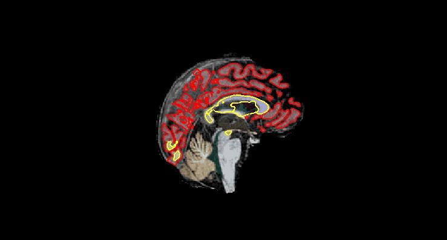

Replication: Hanganu et al., 2014#
Introduction#
This notebook attemps to replicate the following paper with the PPMI dataset:
A. Hanganu et al. “Mild cognitive impairment is linked with faster rate of cortical thinning in patients with Parkinson’s disease longitudinally” Brain, vol. 137, no. 4, pp. 1120–1129, 2014.
Abbreviations:
GMV - gray matter volume
HC- healthy controls
MCI - mild cognitive impairement
MoCA - Montreal Cognitive Assessement
PD-MCI - Parkinson’s disease with MCI
PD-non-MCI - Parkinson’s disease without MCI
This study involved 17 PD-MCI patients, 15 PD-non-MCI patients, and 18 HC. The demografic parameters were as follows (table extracted from the paper):
 Table extracted from the paper A. Hanganu et al. “Mild cognitive impairment is linked with faster rate of cortical thinning in patients with Parkinson’s disease longitudinally” Brain, vol. 137, no. 4, pp. 1120–1129, 2014.
Table extracted from the paper A. Hanganu et al. “Mild cognitive impairment is linked with faster rate of cortical thinning in patients with Parkinson’s disease longitudinally” Brain, vol. 137, no. 4, pp. 1120–1129, 2014.
The main results of the paper can be divided into three sections:
Difference in changes of cortical thickness between groups
PD-MCI showed increased rate of overall cortical thinning compared with both PD-non-MCI and HC (Table 2).
PD-MCI vs PD-non-MCI: increased thinning was detected in the right temporal lobe (middle temporal gyrus, transverse temporal gyrus, temporal pole), the right insula, right inferior frontal gyrus and the right supplementary motor area (Figure 1).
PD-MCI vs HC: increased thinning was again detected in the right temporal lobe and right supplementary motor area. Additional significant clusters included the bilateral precuneus, bi- lateral cuneus, bilateral lingual, as well as right inferior parietal, right lateral occipital and left orbitofrontal region (Figure 1).
PD-non-MCI vs HC: an increased rate of thinning only in the left lateral occipital and left fusiform regions (Figure 1).

 Figures extracted from the paper A. Hanganu et al. “Mild cognitive impairment is linked with faster rate of cortical thinning in patients with Parkinson’s disease longitudinally” Brain, vol. 137, no. 4, pp. 1120–1129, 2014.
Figures extracted from the paper A. Hanganu et al. “Mild cognitive impairment is linked with faster rate of cortical thinning in patients with Parkinson’s disease longitudinally” Brain, vol. 137, no. 4, pp. 1120–1129, 2014.
Correlation between change of cortical thickness and MoCA
a positive correlation between rate of change of cortical thickness and MoCA scores was observed when considering all of the patients with Parkinson’s disease (All-PD group), which was driven by the PD-MCI group. Significant clusters were revealed in the temporal lobe bilaterally, the right occipital medial lobe and the left postcentral gyrus. Clusters of negative correlation were revealed in the anterior cingulate region in the All Parkinson’s disease group and in the transverse temporal gyrus in PD-MCI (Figure 2).
 Figure extracted from the paper A. Hanganu et al. “Mild cognitive impairment is linked with faster rate of cortical thinning in patients with Parkinson’s disease longitudinally” Brain, vol. 137, no. 4, pp. 1120–1129, 2014.
Figure extracted from the paper A. Hanganu et al. “Mild cognitive impairment is linked with faster rate of cortical thinning in patients with Parkinson’s disease longitudinally” Brain, vol. 137, no. 4, pp. 1120–1129, 2014.
Differences in change of subcortical volume between groups
decreased volumes in both Parkinson’s disease groups of the thalamus, caudate nucleus, putamen and hippocampus.
a significant decrease in volume of the amygdala and nucleus accumbens was observed in the PD-MCI group vs both PD-non-MCI and HC (Table 2). ## note that this information is not consistent with Table 2. MD-MCI vs PD-non-MCI is significant only for Amyg
Correlation between subcortical volume differences and MoCA
a significant correlation between change of cognition over time and change of amygdala volume was identified in the All Parkinson’s disease group, and this was driven by the near-significant result observed in the Parkinson’s disease with MCI group (P = 0.059). Additionally both the Parkinson’s disease with MCI and All Parkinson’s disease groups revealed a correlation between cognition and the volume of the thalamus (Table 3).
 Figure extracted from the paper A. Hanganu et al. “Mild cognitive impairment is linked with faster rate of cortical thinning in patients with Parkinson’s disease longitudinally” Brain, vol. 137, no. 4, pp. 1120–1129, 2014.
Figure extracted from the paper A. Hanganu et al. “Mild cognitive impairment is linked with faster rate of cortical thinning in patients with Parkinson’s disease longitudinally” Brain, vol. 137, no. 4, pp. 1120–1129, 2014.
The remainder of this notebook is an attempt to replicate this result using the PPMI dataset.
Initial setup#
Let’s initialize the notebook directory and software dependencies:
import livingpark_utils
utils = livingpark_utils.LivingParkUtils()
random_seed = 2
utils.notebook_init()
import warnings
warnings.filterwarnings("ignore")
This notebook was run on 2023-02-27 17:48:03 UTC +0000
PPMI cohort preparation#
We will build a PPMI cohort that matches the one used in the original study (Table 1) as much as possible. As in other LivingPark replications, we will use the same sample size as the original study. Our cohort will be built directly from PPMI Study Data files so that it can be replicated and updated whenever necessary.
Study data download#
We will start by downloading the PPMI Study Data files required to build our cohort:
demographics
disease duration
Montreal Cognitive Assessment
UPDRS
Hoehn and Yahr score
primary clinical diagnosis
cognitive categorization
medical condition
We will use the LivingPark utils library to download these files from the notebook. If files are already present in the notebook cache, they won’t be downloaded again. Otherwise, you will need to enter your PPMI username and password. In case you don’t have a PPMI account, you can request one here.
import livingpark_utils
from livingpark_utils import download
utils = livingpark_utils.LivingParkUtils()
downloader = download.ppmi.Downloader(utils.study_files_dir)
required_files = [
"Demographics.csv",
"Age_at_visit.csv",
"Primary_Clinical_Diagnosis.csv",
"Cognitive_Categorization.csv",
"Medical_Conditions_Log.csv",
"Concomitant_Medication_Log.csv",
"MDS-UPDRS_Part_III.csv",
"Participant_Status.csv",
"Socio-Economics.csv",
"Montreal_Cognitive_Assessment__MoCA_.csv",
"PD_Diagnosis_History.csv",
"LEDD_Concomitant_Medication_Log.csv",
]
utils.notebook_init()
utils.get_study_files(required_files, default=downloader)
This notebook was run on 2023-02-27 17:48:13 UTC +0000
Download skipped: No missing files!
We will also need file MRI_info.csv produced by another LivingPark notebook available at LivingPark-MRI/livingpark-utils. This file contains a list of T1-weighted MRIs usable for VBM.
from livingpark_utils.scripts import run
from livingpark_utils.scripts import mri_metadata
run.mri_metadata()
This notebook was run on 2023-02-27 17:48:18 UTC +0000
['COR', 'Coronal', 'Cal Head 24', 'Transverse', 'tra_T1_MPRAGE', 'TRA']
['AX', 'Ax', 'axial', 'Phantom', 'T2']
{'Screening': 'SC', 'Baseline': 'BL', 'Month 6': 'V02', 'Month 12': 'V04', 'Month 24': 'V06', 'Month 36': 'V08', 'Month 48': 'V10', 'Symptomatic Therapy': 'ST', 'Unscheduled Visit 01': 'U01', 'Unscheduled Visit 02': 'U02', 'Premature Withdrawal': 'PW'}
Saved in MRI_info.csv
Inclusion criteria#
To replicate the cohort in the original study, we used the following inclusion and exclusion criteria among PPMI subjects.
Early stage of the illness (Hoehn and Yahr I and II stage).
T1-weighted MRI available and usable for VBM (see MRI metadata notebook).
Testing at two timepoints.
MRI and MoCA data available.
During this evaluation, all patients were OFF medication (at both time points), and did not receive any drugs related to Parkinson’s disease for at least 12h before the sessions.
MCI inclusion criteria:
(i) objective: performance > 1.5 SD below standardized mean on two or more subtests within a cognitive domain.
(ii) subjective complaint of cognitive decline.
(iii) absence of significant decline in daily living activities.
(iv) absence of dementia as diagnosed by the evaluating neuropsychologist.
(v) evidence of cognitive abnormalities that cannot be attributed to age.
Our sample: met PPMI criteria for MCI
Control group: met PPMI criteria for healthy controls
Healthy controls also underwent a neuropsychological assessment and those with MCI were excluded.
Exclusion criteria#
Patients excluded if they have other comorbidities.
Cognitively stable patients who converted to MCI at the neuropsychological assessment at Time 2 were excluded.
Group matching#
• No significant differences were observed between the three groups with respect to sex, age and education.
• No significant differences existed between the two patients groups with respect to time since diagnosis or disease advancement as measured by the motor part of the Unified Parkinson’s Disease Rating Scale at Time 1.
import os
import pandas as pd
# Read data files
# Demographics
dem = pd.read_csv(os.path.join(utils.study_files_dir, "Demographics.csv"))[
["PATNO", "SEX", "BIRTHDT"]
]
# Age at visit
age = pd.read_csv(os.path.join(utils.study_files_dir, "Age_at_visit.csv"))[
["PATNO", "EVENT_ID", "AGE_AT_VISIT"]
]
# Education
edu = pd.read_csv(os.path.join(utils.study_files_dir, "Socio-Economics.csv"))[
["PATNO", "EDUCYRS"]
]
# Diagnosis
diag = pd.read_csv(
os.path.join(utils.study_files_dir, "Primary_Clinical_Diagnosis.csv")
)[["PATNO", "EVENT_ID", "PRIMDIAG", "OTHNEURO"]]
# Dx status
dx_status = pd.read_csv(os.path.join(utils.study_files_dir, "Participant_Status.csv"))[
["PATNO", "COHORT"]
]
# Disease duration / year of diagnosis
# med_cond = pd.read_csv(os.path.join(utils.study_files_dir, "Medical_Conditions_Log.csv"))[
# ["PATNO", "EVENT_ID", "MHDIAGYR", "MHCAT"]
# ]
# PD dx history / disease duration calc
pd_hist = pd.read_csv(os.path.join(utils.study_files_dir, "PD_Diagnosis_History.csv"))[
["PATNO", "EVENT_ID", "PDDXDT"]
]
# Cognitive Categorization
cog_cat = pd.read_csv(
os.path.join(utils.study_files_dir, "Cognitive_Categorization.csv")
)[["PATNO", "EVENT_ID", "COGSTATE"]]
# Medication
meds = (
pd.read_csv(os.path.join(utils.study_files_dir, "Concomitant_Medication_Log.csv"))[
["PATNO", "EVENT_ID", "SEQNO", "CMTRT"]
]
.groupby(["PATNO", "EVENT_ID"])[["CMTRT"]]
.aggregate(lambda x: tuple(x))
) # aggregate all meds in a tuple
# L-Dopa
ldopa = pd.read_csv(
os.path.join(utils.study_files_dir, "LEDD_Concomitant_Medication_Log.csv")
)[["PATNO", "EVENT_ID", "LEDD"]]
# meds = pd.read_csv(os.path.join(utils.study_files_dir, "Concomitant_Medication_Log.csv"))[
# ["PATNO", "EVENT_ID", "SEQNO", "CMTRT"]
# ]
"""
# UPDRS and Hoehh Yahr
updrs = pd.read_csv(os.path.join(utils.study_files_dir, "MDS_UPDRS_Part_III.csv"))[
["PATNO", "EVENT_ID", "PDSTATE", "NP3TOT", "NHY"]
]
"""
# Clean UPDRS file. Impute missing ON/OFF values.
# It produces MDS_UPDRS_Part_III_clean.csv file
# from livingpark_utils.scripts import pd_status
updrs = pd.read_csv(
os.path.join(utils.study_files_dir, "MDS_UPDRS_Part_III_clean.csv")
)[["PATNO", "EVENT_ID", "PDSTATE", "NP3TOT", "NHY", "PDTRTMNT"]]
# MoCA
moca = pd.read_csv(
os.path.join(utils.study_files_dir, "Montreal_Cognitive_Assessment__MoCA_.csv")
)[["PATNO", "EVENT_ID", "MCATOT", "INFODT"]]
# MoCA - Use screening instead of baseline.
moca = moca[moca["EVENT_ID"] != "BL"]
moca["EVENT_ID"].mask(moca["EVENT_ID"] == "SC", "BL", inplace=True)
import numpy as np
# Calculate disease duration
from dateutil.parser import parse
from dateutil.relativedelta import relativedelta
pdxhist = pd_hist[(pd_hist["EVENT_ID"] == "SC") & pd_hist["PDDXDT"].notna()]
pd_dur = pd.read_csv(
os.path.join(utils.study_files_dir, "MDS_UPDRS_Part_III_clean.csv"),
low_memory=False,
)[["PATNO", "EVENT_ID", "INFODT"]]
PDDXDT_map = dict(zip(pdxhist["PATNO"].values, pdxhist["PDDXDT"].values))
pd_dur["PDDXDT"] = pd_dur["PATNO"].map(PDDXDT_map)
pd_dur["PDXDUR"] = pd_dur.apply(
lambda row: relativedelta(parse(row["INFODT"]), parse(row["PDDXDT"])).months
if row["PDDXDT"] is not np.nan
else np.nan,
axis=1,
)
pd_dur.drop(labels=["INFODT", "PDDXDT"], inplace=True, axis=1);
# MRI availability
mri = pd.read_csv(os.path.join(utils.study_files_dir, "MRI_info.csv"))
mri["EVENT_ID"] = mri["Visit code"]
mri["PATNO"] = mri["Subject ID"]
mri["Sex"] = mri["Sex"].map({"F": 0, "M": 1})
mri = mri.drop(["Subject ID", "Visit code", "Visit", "Age", "Sex"], axis=1)
mri.groupby("EVENT_ID").size().sort_values(ascending=False).head(5)
EVENT_ID
BL 1961
V10 442
V04 344
V06 332
ST 10
dtype: int64
Data aggregation#
Merge the data into a single dataframe
MRI scan,
Demographics (sex, age at visit),
Education (years of education),
Diagnosis (primary diagnosis),
Dx status (cohort),
Medical condition (year of dx, dx category),
Cognitive category (cognitive state),
Medication
UPDRS (ON/OFF state, UPDRS III total score, Hoehn and Yahr stage)
MoCA (total score)
# Merge into a single df
df = (
mri.merge(diag, on=["PATNO", "EVENT_ID"])
.merge(age, on=["PATNO", "EVENT_ID"], how="left")
.merge(dem, on=["PATNO"])
.merge(edu, on=["PATNO"], how="left")
.merge(dx_status, on=["PATNO"])
.merge(pd_hist, on=["PATNO", "EVENT_ID"], how="left")
.merge(cog_cat, on=["PATNO", "EVENT_ID"])
.merge(meds, on=["PATNO", "EVENT_ID"], how="left")
.merge(updrs, on=["PATNO", "EVENT_ID"])
.merge(moca, on=["PATNO", "EVENT_ID"])
.merge(pd_dur, on=["PATNO", "EVENT_ID"], how="left")
.drop_duplicates()
.groupby("PATNO")
.filter(lambda g: g["EVENT_ID"].nunique() > 1)
)
Pair visits#
# Find visit pairs
from collections import defaultdict
visit2month = {
"BL": 0,
"V01": 3,
"V02": 6,
"V03": 9,
"V04": 12,
"V05": 18,
"V06": 24,
"V07": 30,
"V08": 36,
"V09": 42,
"V10": 48,
"V11": 54,
"V12": 60,
"V13": 72,
"V14": 84,
"V15": 96,
"V16": 108,
"V17": 120,
"V18": 132,
"V19": 144,
"V20": 156,
}
def find_visit_pairs(months: int) -> int:
"""Return the pairs of visits closest to each other, given a target time difference in months."""
diff = float("inf")
diff_hist = defaultdict(dict)
for (k, v), (k_, v_) in combinations(visit2month.items(), 2):
if (diff_ := abs(abs(v - v_) - months)) <= diff:
diff = diff_
diff_hist[diff][k] = k_
return diff_hist[diff]
def sample_cohort(df, /, *, n):
_df = df.drop_duplicates(subset=["PATNO"])
n = min(_df.index.size, n)
return _df.sample(n=n, replace=False, random_state=1)
return _df[_df.index.isin(sample)]
Select healthy controls#
# diagnosis - use screening instead of baseline when PRIMDIAG is missing at baseline
diag_bl = diag[diag["EVENT_ID"] == "BL"]
diag_other = diag[diag["EVENT_ID"] != "BL"]
diag_other["EVENT_ID"].mask(diag_other["EVENT_ID"] == "SC", "BL", inplace=True)
diag_hc = pd.concat([diag_bl, diag_other])
diag_hc = diag_hc.drop_duplicates()
# merge into a single df
df_hc = (
mri.merge(diag_hc, on=["PATNO", "EVENT_ID"])
.merge(age, on=["PATNO", "EVENT_ID"], how="left")
.merge(dem, on=["PATNO"], how="left")
.merge(dx_status, on=["PATNO"])
.merge(edu, on=["PATNO"], how="left")
.merge(cog_cat, on=["PATNO", "EVENT_ID"], how="left")
.merge(moca, on=["PATNO", "EVENT_ID"], how="left")
.merge(pd_hist, on=["PATNO", "EVENT_ID"], how="left")
.merge(meds, on=["PATNO", "EVENT_ID"], how="left")
.merge(updrs, on=["PATNO", "EVENT_ID"], how="left")
.merge(moca, on=["PATNO", "EVENT_ID"], how="left")
.merge(pd_dur, on=["PATNO", "EVENT_ID"], how="left")
.drop_duplicates()
.groupby("PATNO")
.filter(lambda g: g["EVENT_ID"].nunique() > 1)
)
# find how many visit pairs are available for HC group
from itertools import combinations
events = ["BL", "V04", "V06", "V08", "V10"]
print("Unique HC subjects per visit pairs:")
for c in combinations(events, 2):
v0 = set(
df_hc[
(df_hc["EVENT_ID"] == c[0])
& (df_hc["PRIMDIAG"] == 17)
& (df_hc["COHORT"] == 2)
]["PATNO"].values
)
v1 = set(
df_hc[
(df_hc["EVENT_ID"] == c[1])
& (df_hc["PRIMDIAG"] == 17)
& (df_hc["COHORT"] == 2)
]["PATNO"].values
)
if len(v0 & v1):
print(
f"{c[0]:3} & {c[1]:3} = {len(v0 & v1):>3}"
f" | Month difference: {visit2month[c[1]] - visit2month[c[0]]}"
)
# print(v0 & v1)
Unique HC subjects per visit pairs:
BL & V04 = 62 | Month difference: 12
BL & V06 = 9 | Month difference: 24
BL & V08 = 2 | Month difference: 36
BL & V10 = 11 | Month difference: 48
V04 & V06 = 8 | Month difference: 12
V04 & V08 = 1 | Month difference: 24
V04 & V10 = 10 | Month difference: 36
V06 & V08 = 2 | Month difference: 12
V06 & V10 = 2 | Month difference: 24
def pairs_hc(arg):
visit_pairs = find_visit_pairs(arg)
visit_df = df_hc.copy()
visit_df["NEXT_VISIT"] = visit_df["EVENT_ID"].map(visit_pairs)
visit_df = visit_df.merge(
visit_df.drop(
["AGE_AT_VISIT", "SEX", "NEXT_VISIT", "EDUCYRS"],
axis=1,
),
left_on=[
"PATNO",
"NEXT_VISIT",
],
right_on=[
"PATNO",
"EVENT_ID",
],
suffixes=(None, "_NX"),
).drop_duplicates()
return visit_df.loc[
(visit_df["PRIMDIAG"] == 17)
& (visit_df["COHORT"] == 2)
& (visit_df["PRIMDIAG_NX"] == 17)
& (visit_df["COHORT_NX"] == 2)
]
# build database of all available HC
hc_12 = pairs_hc(12)
hc_24 = pairs_hc(24)
hc = pd.concat([hc_12, hc_24], ignore_index=True)
hc = hc.drop_duplicates(subset=["PATNO"])
print("Unique HC number before selection: ", hc["PATNO"].unique().size)
# select 18 HC patients
hc = hc.sample(n=18, random_state=3)
hc["dx_group"] = "HC"
print(len(hc), "HC subjects were randomly selected")
Unique HC number before selection: 67
18 HC subjects were randomly selected
Data aggregation for PD#
Merge the data into a single dataframe
MRI scan,
Demographics (sex, age at visit),
Education (years of education),
Diagnosis (primary diagnosis),
Dx status (cohort),
Medical condition (year of dx, dx category),
Cognitive category (cognitive state),
Medication
UPDRS (ON/OFF state, UPDRS III total score, Hoehn and Yahr stage)
MoCA (total score)
# Merge into a single df for PD
df = (
mri.merge(diag, on=["PATNO", "EVENT_ID"])
.merge(age, on=["PATNO", "EVENT_ID"], how="left")
.merge(dem, on=["PATNO"])
.merge(edu, on=["PATNO"], how="left")
.merge(dx_status, on=["PATNO"])
.merge(pd_hist, on=["PATNO", "EVENT_ID"], how="left")
.merge(cog_cat, on=["PATNO", "EVENT_ID"])
.merge(meds, on=["PATNO", "EVENT_ID"], how="left")
.merge(updrs, on=["PATNO", "EVENT_ID"])
.merge(moca, on=["PATNO", "EVENT_ID"])
.merge(pd_dur, on=["PATNO", "EVENT_ID"], how="left")
.drop_duplicates()
.groupby("PATNO")
.filter(lambda g: g["EVENT_ID"].nunique() > 1)
)
Number of available visit pairs - PD meeting all the criteria#
# Pair PD-non-MCI
# Include Primdiag 1 & Cogstate 1 & Cohort 1 & [NHY 1 | 2] & MoCA & no comorb & UPDRS OFF
from itertools import combinations
events = ["BL", "V04", "V06", "V08", "V10"]
print("Unique PD-non-MCI subjects per visit pairs:")
for c in combinations(events, 2):
v0 = set(
df[
(df["EVENT_ID"] == c[0])
& (df["PRIMDIAG"] == 1)
& (df["COGSTATE"] == 1)
& (df["COHORT"] == 1)
& df["NHY"].isin(["1", "2"])
& (df["MCATOT"].notnull())
& (df["OTHNEURO"].isnull())
& (df["PDSTATE"] == "OFF")
]["PATNO"].values
)
v1 = set(
df[
(df["EVENT_ID"] == c[1])
& (df["PRIMDIAG"] == 1)
& (df["COGSTATE"] == 1)
& (df["COHORT"] == 1)
& df["NHY"].isin(["1", "2"])
& (df["MCATOT"].notnull())
& (df["OTHNEURO"].isnull())
& (df["PDSTATE"] == "OFF")
]["PATNO"].values
)
if len(v0 & v1):
print(
f"{c[0]:3} & {c[1]:3} = {len(v0 & v1):>3}"
f" | Month difference: {visit2month[c[1]] - visit2month[c[0]]}"
)
Unique PD-non-MCI subjects per visit pairs:
BL & V04 = 27 | Month difference: 12
V04 & V06 = 22 | Month difference: 12
V04 & V10 = 24 | Month difference: 36
V06 & V10 = 32 | Month difference: 24
# Pair PD-MCI
# Include Primdiag 1 & Cogstate 1 & Cohort 1 & [NHY 1 | 2] & MoCA & no comorb & UPDRS OFF
from itertools import combinations
events = ["BL", "V04", "V06", "V08", "V10"]
print("Unique PD-MCI subjects per visit pairs:")
for c in combinations(events, 2):
v0 = set(
df[
(df["EVENT_ID"] == c[0])
& (df["PRIMDIAG"] == 1)
& (df["COGSTATE"] == 2)
& (df["COHORT"] == 1)
& df["NHY"].isin(["1", "2"])
& (df["MCATOT"].notnull())
& (df["OTHNEURO"].isnull())
& (df["PDSTATE"] == "OFF")
]["PATNO"].values
)
v1 = set(
df[
(df["EVENT_ID"] == c[1])
& (df["PRIMDIAG"] == 1)
& (df["COGSTATE"] == 2)
& (df["COHORT"] == 1)
& df["NHY"].isin(["1", "2"])
& (df["MCATOT"].notnull())
& (df["OTHNEURO"].isnull())
& (df["PDSTATE"] == "OFF")
]["PATNO"].values
)
if len(v0 & v1):
print(
f"{c[0]:3} & {c[1]:3} = {len(v0 & v1):>3}"
f" | Month difference: {visit2month[c[1]] - visit2month[c[0]]}"
)
# print(v0 & v1)
Unique PD-MCI subjects per visit pairs:
BL & V04 = 2 | Month difference: 12
V04 & V06 = 1 | Month difference: 12
V04 & V10 = 2 | Month difference: 36
V06 & V10 = 5 | Month difference: 24
Select PD-MCI patients#
This script has been written with a prior knowledge that there are less PD-MCI patients who meet the inclusion criteria than PD-non-MCI patients in PPMI.
def pairs_mci(arg):
visit_pairs = find_visit_pairs(arg)
visit_df = df.copy()
visit_df["NEXT_VISIT"] = visit_df["EVENT_ID"].map(visit_pairs)
visit_df = visit_df.merge(
visit_df.drop(
["AGE_AT_VISIT", "SEX", "NEXT_VISIT", "EDUCYRS"],
axis=1,
),
left_on=[
"PATNO",
"NEXT_VISIT",
],
right_on=[
"PATNO",
"EVENT_ID",
],
suffixes=(None, "_NX"),
).drop_duplicates()
return visit_df.loc[
(visit_df["COGSTATE"] == 2)
& (visit_df["PRIMDIAG"] == 1)
& (visit_df["COHORT"] == 1)
& visit_df["NHY"].isin(["1", "2"])
& (visit_df["MCATOT"].notnull())
& (visit_df["OTHNEURO"].isnull())
& (visit_df["PDSTATE"] == "OFF")
& (visit_df["COGSTATE_NX"] == 2)
& (visit_df["PRIMDIAG_NX"] == 1)
& (visit_df["COHORT_NX"] == 1)
& visit_df["NHY_NX"].isin(["1", "2"])
& (visit_df["MCATOT_NX"].notnull())
& (visit_df["OTHNEURO_NX"].isnull())
& (visit_df["PDSTATE_NX"] == "OFF")
]
mci = pairs_mci(12)
mci = mci.drop_duplicates(subset=["PATNO"])
if len(mci) > 16:
print("There is enough PD-MCI patients. ", len(mci), " PD-MCI patients found")
else:
mci_24 = pairs_mci(24)
mci = pd.concat([mci, mci_24], ignore_index=True)
mci = mci.drop_duplicates(subset=["PATNO"])
if len(mci) > 16:
print("There is enough PD-MCI patients. ", len(mci), " PD-MCI patients found")
else:
mci_36 = pairs_mci(36)
mci = pd.concat([mci, mci_36], ignore_index=True)
mci = mci.drop_duplicates(subset=["PATNO"])
print("The final PD-MCI sample size is ", len(mci), " patients.")
mci["dx_group"] = "PD-MCI"
The final PD-MCI sample size is 10 patients.
Select PD-non-MCI patients#
All available pairs for PD-non-MCI patients are selected in this step. They will be matched to a smaller PD-MCI cohort
def pairs_nonmci(arg):
visit_pairs = find_visit_pairs(arg)
visit_df = df.copy()
visit_df["NEXT_VISIT"] = visit_df["EVENT_ID"].map(visit_pairs)
visit_df = visit_df.merge(
visit_df.drop(
["AGE_AT_VISIT", "SEX", "NEXT_VISIT", "EDUCYRS"],
axis=1,
),
left_on=[
"PATNO",
"NEXT_VISIT",
],
right_on=[
"PATNO",
"EVENT_ID",
],
suffixes=(None, "_NX"),
).drop_duplicates()
return visit_df.loc[
(visit_df["COGSTATE"] == 1)
& (visit_df["PRIMDIAG"] == 1)
& (visit_df["COHORT"] == 1)
& visit_df["NHY"].isin(["1", "2"])
& (visit_df["MCATOT"].notnull())
& (visit_df["OTHNEURO"].isnull())
& (visit_df["PDSTATE"] == "OFF")
& (visit_df["COGSTATE_NX"] == 1)
& (visit_df["PRIMDIAG_NX"] == 1)
& (visit_df["COHORT_NX"] == 1)
& visit_df["NHY_NX"].isin(["1", "2"])
& (visit_df["MCATOT_NX"].notnull())
& (visit_df["OTHNEURO_NX"].isnull())
& (visit_df["PDSTATE_NX"] == "OFF")
]
wo_mci_12 = pairs_nonmci(12)
wo_mci_24 = pairs_nonmci(24)
wo_mci_all = pd.concat([wo_mci_12, wo_mci_24], ignore_index=True)
wo_mci_all = wo_mci_all.drop_duplicates(subset=["PATNO"])
print("There are ", len(wo_mci_all), " PD-non-MCI patients to match PD-MCI group.")
There are 69 PD-non-MCI patients to match PD-MCI group.
Group matching#
Match PD-non-MCI sample to the smaller PD-MCI cohort
We implemented a nearest-neighbor matching loop based on the Euclidean distance. We will match PD-MCI and PD-non-MCI groups for age, sex, education, UPDRS, and MoCA.
def nn(x, df, matched_vars):
"""
Find index of nearest neighbor of x in df
"""
# Select subjects
df_match = df
# Compute squared distance between x and all elements in df, using normalized variables
df_match["dist"] = sum(
(df_match[f"{var}"] - x[f"{var}"].values[0]) ** 2 for var in matched_vars
)
# Return the element in df with the smallest distance
df_match.sort_values("dist", inplace=True)
return df_match.head(
1
) ## there's probably a better way to do it but it should work
def match(n, group1_df, group2_df, matched_vars):
"""
Randomly pick n elements in group1_df, then find n matching elements in group2_df.
Ensure that each group only contains 1 or less element from each patient and that
no patient has elements in both groups.
"""
from numpy.random import choice, seed
# Select n random patients in group1
group1_patnos = sorted(pd.unique(group1_df["PATNO"]))
seed(0) # change this to bootstrap population
group1_patnos_sample = choice(
group1_patnos, n, replace=True
) # !! have to replace due to a small cohort
# Remove the selected patients from group2
for p in group1_patnos_sample:
group2_df = group2_df[group2_df["PATNO"] != p]
group1_matched = pd.DataFrame(columns=group1_df.columns)
group2_matched = pd.DataFrame(columns=group1_df.columns)
for p in group1_patnos_sample: # for each patient in sampled list
# Pick a random element from this patient in group1
s = group1_df[group1_df["PATNO"] == p].sample(1)
# Find the best match in group2
t = nn(s, group2_df, matched_vars)
# Add s and t to matched groups
group1_matched = group1_matched.append(s)
group2_matched = group2_matched.append(t)
# Remove t's patient from group 2 so that it doesn't get selected again
group2_df = group2_df[group2_df["PATNO"] != t["PATNO"].values[0]]
return group1_matched, group2_matched
# age is not used for matching. if used, the groups differ in MoCA and T2-T1 time
matched_vars = ["SEX", "MCATOT", "EDUCYRS", "NP3TOT", "PDXDUR"]
# Apply matching to get 15 PD-non-MCI patients
mci_matched, wo_mci_matched = match(15, mci, wo_mci_all, matched_vars)
patids = pd.unique(pd.concat([mci_matched, wo_mci_matched], axis=0)["PATNO"])
mci_matched = mci_matched.drop_duplicates(subset=["PATNO"])
if len(wo_mci_matched) > 14:
print(
"There is enough PD-non-MCI patients. ",
len(wo_mci_matched),
" patients included in the analysis.",
)
else:
print(
"There is not enough PD-non-MCI patients. ",
len(wo_mci_matched),
" patients included in the analysis.",
)
wo_mci_matched["dx_group"] = "PD-non-MCI"
There is enough PD-non-MCI patients. 15 patients included in the analysis.
Descriptive statistics#
# get UPDRS for patients during ON state
wo_mci_patno = wo_mci_matched["PATNO"]
wo_mci_patno = wo_mci_patno.tolist()
wo_mci_updrs_on = updrs[["PATNO", "EVENT_ID", "PDSTATE", "NP3TOT"]]
wo_mci_updrs_on = wo_mci_updrs_on[
(wo_mci_updrs_on["PDSTATE"] == "ON") & (wo_mci_updrs_on["PATNO"].isin(wo_mci_patno))
]
mci_patno = mci_matched["PATNO"]
mci_patno = mci_patno.tolist()
mci_updrs_on = updrs[["PATNO", "EVENT_ID", "PDSTATE", "NP3TOT"]]
mci_updrs_on = mci_updrs_on[
(mci_updrs_on["PDSTATE"] == "ON") & (mci_updrs_on["PATNO"].isin(mci_patno))
]
wo_mci_updrs = wo_mci_matched.merge(
wo_mci_updrs_on, on=["PATNO", "EVENT_ID"], how="left", suffixes=(None, "_on")
)
mci_updrs = mci_matched.merge(
mci_updrs_on, on=["PATNO", "EVENT_ID"], how="left", suffixes=(None, "_on")
)
# convert NHY and PATNO string to int
mci_updrs["NHY"] = pd.to_numeric(mci_updrs["NHY"])
mci_updrs["NHY_NX"] = pd.to_numeric(mci_updrs["NHY_NX"])
wo_mci_updrs["NHY"] = pd.to_numeric(wo_mci_updrs["NHY"])
wo_mci_updrs["NHY_NX"] = pd.to_numeric(wo_mci_updrs["NHY_NX"])
hc["NHY"] = pd.to_numeric(hc["NHY"])
hc["NHY_NX"] = pd.to_numeric(hc["NHY_NX"])
mci_updrs["PATNO"] = pd.to_numeric(mci_updrs["PATNO"])
wo_mci_updrs["PATNO"] = pd.to_numeric(wo_mci_updrs["PATNO"])
mci_final = mci_updrs
wo_mci_final = wo_mci_updrs
# calculate Duration T2-T1 (months)
# based on MoCA assessment
mci_final["INFODT"] = pd.to_datetime(mci_final["INFODT"])
mci_final["INFODT_NX"] = pd.to_datetime(mci_final["INFODT_NX"])
wo_mci_final["INFODT"] = pd.to_datetime(wo_mci_final["INFODT"])
wo_mci_final["INFODT_NX"] = pd.to_datetime(wo_mci_final["INFODT_NX"])
hc["INFODT_x"] = pd.to_datetime(hc["INFODT_x"])
hc["INFODT_x_NX"] = pd.to_datetime(hc["INFODT_x_NX"])
mci_final["durationT2_T1"] = (
mci_final["INFODT_NX"] - mci_final["INFODT"]
) / np.timedelta64(1, "M")
wo_mci_final["durationT2_T1"] = (
wo_mci_final["INFODT_NX"] - wo_mci_final["INFODT"]
) / np.timedelta64(1, "M")
hc["durationT2_T1"] = (hc["INFODT_x_NX"] - hc["INFODT_x"]) / np.timedelta64(1, "M")
from collections.abc import Iterable
import rich
from rich.console import Console
from rich.table import Table
def cohort_summary(*, hc, nc, mci, title):
def gen_row(D, *, agg, col, f="4.1f", sep=" ± "):
if not isinstance(agg, str) and isinstance(agg, Iterable):
return [f"{sep}".join([f"{d.loc[a][col]:{f}}" for a in agg]) for d in D]
else:
return [f"{d.loc[agg][col]:{f}}" for d in D]
def gender_ratio(df):
male_count = df[df["SEX"] == 1]["PATNO"].nunique()
return f"{male_count:.0f}, {male_count / df['PATNO'].nunique() * 100:.1f}%"
D = [hc.describe(), nc.describe(), mci.describe()]
table = Table(title=title, box=rich.box.SIMPLE_HEAVY, show_footer=True)
table.add_column("Subject groups", footer="Values expressed as mean ± SD.")
table.add_column("HC")
table.add_column("PD-non-MCI")
table.add_column("PD-MCI")
# table.add_column("[italic]p") # TODO
table.add_row("n", *gen_row(D, agg="count", col="PATNO", f=".0f"))
table.add_row("Age (y)", *gen_row(D, agg=["mean", "std"], col="AGE_AT_VISIT"))
table.add_row(
"Age range", *gen_row(D, agg=["min", "max"], col="AGE_AT_VISIT", sep=" - ")
)
table.add_row(
"Gender (male, %)", gender_ratio(hc), gender_ratio(nc), gender_ratio(mci)
)
table.add_row("Education (y)", *gen_row(D, agg=["mean", "std"], col="EDUCYRS"))
table.add_row(
"Disease duration (y)", "", *gen_row(D[1:], agg=["mean", "std"], col="PDXDUR")
)
# table.add_row("LEDD (mg/d) baseline", ) # TODO
table.add_row("H&Y baseline", *gen_row(D, agg=["mean", "std"], col="NHY"))
table.add_row("H&Y follow-up", *gen_row(D, agg=["mean", "std"], col="NHY_NX"))
table.add_row(
"UPDRS III OFF baseline", "", *gen_row(D[1:], agg=["mean", "std"], col="NP3TOT")
)
table.add_row(
"UPDRS III ON baseline",
"",
*gen_row(D[1:], agg=["mean", "std"], col="NP3TOT_on"),
)
table.add_row(
"UPDRS III OFF follow-up",
"",
*gen_row(D[1:], agg=["mean", "std"], col="NP3TOT_NX"),
)
table.add_row(
"MoCA baseline", "", *gen_row(D[1:], agg=["mean", "std"], col="MCATOT")
)
table.add_row(
"MoCA follow-up", "", *gen_row(D[1:], agg=["mean", "std"], col="MCATOT_NX")
)
table.add_row(
"Duration T2 - T1 (m)", *gen_row(D, agg=["mean", "std"], col="durationT2_T1")
)
console = Console()
console.print(table)
# test for group differences
from scipy.stats import ttest_ind, chi2_contingency
[chi2_sex, p_sex, dof_sex, expected_sex] = chi2_contingency(
mci_final["AGE_AT_VISIT"], wo_mci_final["AGE_AT_VISIT"]
)
[t_age, p_age] = ttest_ind(mci_final["AGE_AT_VISIT"], wo_mci_final["AGE_AT_VISIT"])
[t_edu, p_edu] = ttest_ind(mci_final["EDUCYRS"], wo_mci_final["EDUCYRS"])
[t_dur, p_dur] = ttest_ind(mci_final["PDXDUR"], wo_mci_final["PDXDUR"])
[t_updrs_off, p_updrs_off] = ttest_ind(mci_final["NP3TOT"], wo_mci_final["NP3TOT"])
print(
"There are",
mci_final["NP3TOT_on"].isna().sum(),
"out of",
len(mci_final),
"missing UPDRS T1 ON values in PD-MCI.",
)
print(
"There are",
wo_mci_final["NP3TOT_on"].isna().sum(),
"out of",
len(wo_mci_final),
"missing UPDRS T1 ON values in PD-MCI.",
)
[t_updrs_on, p_updrs_on] = ttest_ind(
mci_final["NP3TOT_on"].dropna(), wo_mci_final["NP3TOT_on"].dropna()
)
[t_moca, p_moca] = ttest_ind(mci_final["MCATOT"], wo_mci_final["MCATOT"])
[t_tdiff, p_tdiff] = ttest_ind(
mci_final["durationT2_T1"], wo_mci_final["durationT2_T1"]
)
print(
"\n",
"PD-MCI vs PD-non-MCI p values:",
"sex p",
p_sex,
"edu p",
p_edu,
"dx dur p",
p_dur,
"updrs off t1 p",
p_updrs_off,
"updsr on t1 p",
p_updrs_on,
"moca p",
p_moca,
"T2-T1 p",
p_tdiff,
"\n",
)
if chi2_sex > 0.05:
print("There is no difference between PD-MCI and PD-non-MCI in sex frequency")
else:
print("There is a difference between PD-MCI and PD-non-MCI in sex frequency")
if p_edu > 0.05:
print("There is no difference between PD-MCI and PD-non-MCI in years of education")
else:
print("There is a difference between PD-MCI and PD-non-MCI in years of education")
if p_dur > 0.05:
print("There is no difference between PD-MCI and PD-non-MCI in disease duration")
else:
print("There is a difference between PD-MCI and PD-non-MCI in disease duration")
if p_updrs_off > 0.05:
print("There is no difference between PD-MCI and PD-non-MCI in UPDRS T1 OFF")
else:
print("There is a difference between PD-MCI and PD-non-MCI in UPDRS T1 OFF")
if p_updrs_on > 0.05:
print("There is no difference between PD-MCI and PD-non-MCI in UPDRS T1 ON")
else:
print("There is a difference between PD-MCI and PD-non-MCI in UPDRS T1 ON")
if p_moca > 0.05:
print("There is no difference between PD-MCI and PD-non-MCI in MoCA")
else:
print("There is a difference between PD-MCI and PD-non-MCI in MoCA")
if p_tdiff > 0.05:
print(
"There is no difference between PD-MCI and PD-non-MCI in the time between T1 and T2"
)
else:
print(
"There is a difference between PD-MCI and PD-non-MCI in the time between T1 and T2"
)
[t_tdiff_mci_hc, p_tdiff_mci_hc] = ttest_ind(
mci_final["durationT2_T1"], hc["durationT2_T1"]
)
[t_tdiff_womci_hc, p_tdiff_womci_hc] = ttest_ind(
wo_mci_final["durationT2_T1"], hc["durationT2_T1"]
)
[t_age_mci_hc, p_age_mci_hc] = ttest_ind(mci_final["AGE_AT_VISIT"], hc["AGE_AT_VISIT"])
[t_age_womci_hc, p_age_womci_hc] = ttest_ind(
wo_mci_final["AGE_AT_VISIT"], hc["AGE_AT_VISIT"]
)
print(
"\n",
"HC vs PD p values:",
"T2-T1 mci-hc",
p_tdiff_mci_hc,
"T2-T1 nonmci-hc",
p_tdiff_womci_hc,
"age mci-hc",
p_age_mci_hc,
"age nonmci-hc",
p_age_womci_hc,
"\n",
)
if p_tdiff_mci_hc > 0.05:
print("There is no difference between HC and PD-MCI in the time between T1 and T2")
else:
print("There is a difference between HC and PD-MCI in the time between T1 and T2")
if p_tdiff_womci_hc > 0.05:
print(
"There is no difference between HC and PD-non-MCI in the time between T1 and T2"
)
else:
print(
"There is a difference between HC and PD-non-MCI in the time between T1 and T2"
)
if p_age_mci_hc > 0.05:
print("There is no difference between HC and PD-MCI in age")
else:
print("There is a difference between HC and PD-MCI in age")
if p_age_womci_hc > 0.05:
print("There is no difference between HC and PD-non-MCI in age")
else:
print("There is a difference between HC and PD-non-MCI in age")
There are 5 out of 10 missing UPDRS T1 ON values in PD-MCI.
There are 8 out of 15 missing UPDRS T1 ON values in PD-MCI.
PD-MCI vs PD-non-MCI p values: sex p 1.0 edu p nan dx dur p 0.8983646622916739 updrs off t1 p 0.5450424659830888 updsr on t1 p 0.7236375666275758 moca p 0.05359221099902946 T2-T1 p 0.1105534586592145
There is a difference between PD-MCI and PD-non-MCI in sex frequency
There is a difference between PD-MCI and PD-non-MCI in years of education
There is no difference between PD-MCI and PD-non-MCI in disease duration
There is no difference between PD-MCI and PD-non-MCI in UPDRS T1 OFF
There is no difference between PD-MCI and PD-non-MCI in UPDRS T1 ON
There is no difference between PD-MCI and PD-non-MCI in MoCA
There is no difference between PD-MCI and PD-non-MCI in the time between T1 and T2
HC vs PD p values: T2-T1 mci-hc 0.0003446193620317317 T2-T1 nonmci-hc 0.003927490083541382 age mci-hc 0.7625053437811584 age nonmci-hc 0.19923697998278472
There is a difference between HC and PD-MCI in the time between T1 and T2
There is a difference between HC and PD-non-MCI in the time between T1 and T2
There is no difference between HC and PD-MCI in age
There is no difference between HC and PD-non-MCI in age
cohort_summary(
hc=hc,
nc=wo_mci_final,
mci=mci_final,
title="Demographic and clinical characteristics",
)
Demographic and clinical characteristics Subject groups HC PD-non-MCI PD-MCI ━━━━━━━━━━━━━━━━━━━━━━━━━━━━━━━━━━━━━━━━━━━━━━━━━━━━━━━━━━━━━━━━━━━━━━━━━━ n 18 15 10 Age (y) 66.9 ± 6.1 63.4 ± 9.4 67.6 ± 5.8 Age range 53.2 - 76.8 42.8 - 75.3 61.0 - 79.2 Gender (male, %) 15, 83.3% 10, 66.7% 10, 100.0% Education (y) 16.1 ± 2.9 14.5 ± 1.9 14.6 ± 2.4 Disease duration (y) 5.1 ± 3.1 4.9 ± 3.3 H&Y baseline 0.0 ± 0.0 1.7 ± 0.5 1.8 ± 0.4 H&Y follow-up 0.1 ± 0.5 1.7 ± 0.5 1.8 ± 0.4 UPDRS III OFF baseline 22.3 ± 10.8 25.2 ± 13.0 UPDRS III ON baseline 17.7 ± 9.6 20.2 ± 14.3 UPDRS III OFF follow-up 25.7 ± 11.3 29.3 ± 13.6 MoCA baseline 25.9 ± 1.8 24.3 ± 1.9 MoCA follow-up 27.0 ± 1.7 24.5 ± 2.4 Duration T2 - T1 (m) 14.5 ± 2.9 19.1 ± 5.4 23.9 ± 9.0 ━━━━━━━━━━━━━━━━━━━━━━━━━━━━━━━━━━━━━━━━━━━━━━━━━━━━━━━━━━━━━━━━━━━━━━━━━━ Values expressed as mean ± SD.
Get MRI data#
merged_data = pd.concat([mci_final, wo_mci_final, hc], ignore_index=True)
merged_data["visit_no"] = "first"
second_visit = merged_data
second_visit = second_visit.drop(["Description", "EVENT_ID"], axis=1)
second_visit.rename(
columns={"Description_NX": "Description", "EVENT_ID_NX": "EVENT_ID"}, inplace=True
)
second_visit["visit_no"] = "second"
download_data = merged_data.append(second_visit)
# download MRI data
utils.get_T1_nifti_files(download_data, default=downloader, symlink=True)
Download skipped: No missing files!
# rename PATNO to distinguish between the first and the second visit after preprocessing
# PATNO is used as dir name during preprocessing
download_data["PATNO_id"] = (
download_data["PATNO"].astype(str) + "_" + download_data["visit_no"]
)
Image preprocessing#
Data is preprocessed using Freesurfer’s recon-all.
Segmentation
We only segment images for which an existing segmentation is not found in directory outputs.
Preprocessing pipeline by Hanganu et al.#
Cortical reconstruction and volumetric segmentation was performed with FreeSurfer 5.3
motion correction and averaging of multiple volumetric T1-weighted images, removal of non-brain tissue using a hybrid surface deformation procedure, automated Talairach transformation, segmentation of the subcortical white matter and deep grey matter volumetric structures, intensity normalization, tessellation of the grey/white matter boundary, automated topology correction, and surface deformation following intensity gradients to optimally place the grey/ white and grey/cerebrospinal fluid borders at the location where the greatest shift in intensity defines the transition to the other tissue class.
images where automatically processed with the longitudinal stream. Specifically an unbiased within-subject template space and image was created using robust, inverse consistent registration.
Several processing steps, such as skull stripping, Talairach transforms, atlas registration as well as spherical surface maps and parcellations were then initialized with common information from the within-subject template.
Misclassification of tissue types was corrected by minimal manual adjustment. Cortical thickness was calculated as the closest distance from the grey/white matter boundary to the grey/cerebrospinal fluid boundary at each vertex on the tessellated surface.
Cortical thickness was smoothed with a 10-mm full-width half-height Gaussian kernel to reduce local variations in the measurements (# whole-brain correlation with MoCA).
For the analysis of subcortical longitudinal changes, the subcortical structures were segmented in order to obtain their volumes. The volumes were then corrected by performing a regression over the estimated total intracranial volume.
Analyses were performed on Compute Canada servers (Advanced Research Computing facilities provided by the Compute Canada Federation). If you don’t have Compute Canada account you may be able to request one here.
Otherwise, please use any other available server or your local machine to run the analyses. You may need to adjust the following code depending on the method you use.
# copy working directory to Compute Canada server
# please provide the following:
hostname = "" # please change to the hostname you use
username = "" # please provide your Compute Canada username
password = "" # please provide your Compute Canada password
from paramiko import SSHClient
from scp import SCPClient
ssh = SSHClient()
ssh.load_system_host_keys()
ssh.connect(
hostname=hostname,
username=username,
password=password,
)
# SCPCLient takes a paramiko transport as its only argument
scp = SCPClient(ssh.get_transport())
cdir = "./"
scp.put(cdir, "hanganu", recursive=True)
# scp.get('file_path_on_remote_machine', 'file_path_on_local_machine')
scp.close()
Preprocessing#
Data are preprocessed using longitudinal stream implemented in Freesurfer. Click here for details.
Preprocessing is performed on an external server. Boutiques is used to manage Freesurfer’s functions within a container.
%load_ext slurm_magic
preprocessing step 1 - cross-sectional#
# prepare node for computation. it includes downloading the container
! module load singularity
from boutiques import bosh
zid = "zenodo.4043546"
bosh(["exec", "prepare", zid])
freesurfer = boutiques.descriptor2func.function(zid)
# exclude subjects from the dataset if the image was already preprocessed
import os.path
data_to_process = download_data
for patno in data_to_process["PATNO"]:
if os.path.exists("preproc_FS_codes/exitcode_{0}.txt".format(patno)) == True:
exitcode = open("preproc_FS_codes/exitcode_{0}.txt".format(patno), "r")
if exitcode.read() == "0":
data = data_to_process.drop["[0]".format(patno)]
print("The image ID", patno, "has been preprocessed.")
elif exitcode.read() != "0":
print("The image ID", patno, "has not been preprocessed successfully.")
else:
print("The image ID", patno, "has not been preprocessed at all.")
# save df with all timepoints as json
import json
download_data["PATNO_id"] = download_data["PATNO_id"].astype(str)
data_to_process = download_data.reset_index()
small_df = data_to_process[["PATNO_id", "File name"]]
json_data = small_df.to_json()
meta = json.loads(json_data)
with open("json_data.json", "w") as fout:
json.dump(meta, fout, indent=4)
%%writefile preprocess_FS.py
# save proprocessing script to submit jobs to the server later
# copy your FreeSurfer license to FS_license/license.txt or update the license path below
import os
import json
import boutiques
from boutiques import bosh
zid = "zenodo.4043546"
from boutiques.descriptor2func import function
#bosh(["exec", "prepare", zid])
freesurfer = function(zid)
task_id = str(os.environ["SLURM_ARRAY_TASK_ID"])
with open('json_data.json') as fin:
subject_map = json.load(fin)
out_fs = freesurfer('--imagepath', 'freesurfer-freesurfer-7.1.1.simg.tmp',
input=subject_map["File name"][task_id], qcache_flag=True,
license="FS_license/license.txt",
subjid=str(subject_map["PATNO_id"][task_id]),
)
#exitcode = out.stdout
exitcode = str(out_fs.exit_code)
with open('preproc_FS_codes/exitcode_{0}.txt'.format(str(subject_map["PATNO_id"][task_id])), 'w') as f:
f.write(exitcode)
%%sbatch --array=0-85
#!/bin/bash
#SBATCH --job-name=FS_preproc
#SBATCH --mem=4G
#SBATCH --cpus-per-task=2
#SBATCH --nodes=1
#SBATCH --output=FS_preproc.out
#SBATCH --error=FS_preproc.err
#SBATCH --time=10:0:0
. venv/bin/activate # opens virtual environment. change depending where you proprocess the data
module load singularity
python preprocess_FS.py
preprocessing step 2 - base template#
# save df with a single input for each subject as json
import json
download_data["PATNO"] = download_data["PATNO"].astype(str)
data_to_process = download_data.reset_index()
small_df = data_to_process[["PATNO"]]
small_df = small_df.drop_duplicates()
json_data = small_df.to_json()
meta = json.loads(json_data)
with open("json_data_base.json", "w") as fout:
json.dump(meta, fout, indent=4)
%%writefile preprocess_FS_base.py
# Step 2. create an unbiased template from all time points for each subject and process it with recon-all:
import os
import json
import boutiques
from boutiques import bosh
zid = "zenodo.7327935"
from boutiques.descriptor2func import function
#bosh(["exec", "prepare", zid])
freesurfer = function(zid)
task_id = str(os.environ["SLURM_ARRAY_TASK_ID"])
with open('json_data_base.json') as fin:
subject_map = json.load(fin)
out_fs = freesurfer('--imagepath', 'freesurfer-freesurfer-7.1.1.simg.tmp',
tp1=subject_map["PATNO"+"_first"][task_id],
tp2=subject_map["PATNO"+"_second"][task_id],
license="FS_license/license.txt",
outputdir=str(subject_map["PATNO"+"_base"][task_id]),
)
exitcode = str(out_fs.exit_code)
with open('preproc_FS_codes/exitcode_base_{0}.txt'.format(str(subject_map["PATNO"][task_id])), 'w') as f:
f.write(exitcode)
%%sbatch --array=0-42
#!/bin/bash
#SBATCH --job-name=FS_preproc
#SBATCH --mem=4G
#SBATCH --cpus-per-task=2
#SBATCH --nodes=1
#SBATCH --output=FS_preproc_base.out
#SBATCH --error=FS_preproc_base.err
#SBATCH --time=10:0:0
. venv/bin/activate # opens virtual environment. change depending where you proprocess the data
module load singularity
python preprocess_FS_base.py
preprocessing step 3 - longitudinally processed timepoints#
# prepare node for computation
# this should be run on a server connected to the internet
# load recon-all base descriptor
! module load singularity
import boutiques
from boutiques import bosh
zid = "zenodo.7339689"
# bosh(["exec", "prepare", zid])
freesurfer = boutiques.descriptor2func.function(zid)
# save df with all timepoints and base as json
import json
download_data["PATNO"] = download_data["PATNO"].astype(str)
download_data["PATNO_base"] = download_data["PATNO"] + "_base"
download_data["PATNO_base"] = download_data["PATNO_base"].astype(str)
data_to_process = download_data.reset_index()
small_df = data_to_process[["PATNO_id", "PATNO_base"]]
json_data = small_df.to_json()
meta = json.loads(json_data)
with open("json_data_long.json", "w") as fout:
json.dump(meta, fout, indent=4)
%%writefile preprocess_FS_long.py
# Step 3. "-long" longitudinally process all timepoints (recon-all -long):
import os
import json
import boutiques
from boutiques import bosh
zid = "zenodo.7339689"
from boutiques.descriptor2func import function
#bosh(["exec", "prepare", zid])
freesurfer = function(zid)
task_id = str(os.environ["SLURM_ARRAY_TASK_ID"])
with open('json_data_long.json') as fin:
subject_map = json.load(fin)
out_fs = freesurfer('--imagepath', 'freesurfer-freesurfer-7.1.1.simg.tmp',
tp=subject_map["PATNO_id"][task_id],
base=subject_map["PATNO_base"][task_id],
license="FS_license/license.txt",
)
exitcode = str(out_fs.exit_code)
with open('preproc_FS_codes/exitcode_long_{0}.txt'.format(str(subject_map["PATNO_id"][task_id])), 'w') as f:
f.write(exitcode)
%%sbatch --array=0-85
#!/bin/bash
#SBATCH --job-name=FS_preproc
#SBATCH --mem=4G
#SBATCH --cpus-per-task=2
#SBATCH --nodes=1
#SBATCH --output=FS_preproc_long.out
#SBATCH --error=FS_preproc_long.err
#SBATCH --time=10:0:0
. venv/bin/activate # opens virtual environment. change depending where you proprocess the data
module load singularity
python preprocess_FS_long.py
preprocessing step 4 - Qcache#
%%writefile preprocess_FS_long_qcache.py
# save proprocessing script to submit jobs to the server later
import os
import json
import boutiques
from boutiques import bosh
zid = "zenodo.7343403"
from boutiques.descriptor2func import function
#bosh(["exec", "prepare", zid])
freesurfer = function(zid)
task_id = str(os.environ["SLURM_ARRAY_TASK_ID"])
with open('json_data_long.json') as fin:
subject_map = json.load(fin)
out_fs = freesurfer('--imagepath', 'freesurfer-freesurfer-7.1.1.simg.tmp',
tp=subject_map["PATNO_id"][task_id],
base=subject_map["PATNO_base"][task_id],
license="FS_license/license.txt",
)
#exitcode = out.stdout
exitcode = str(out_fs.exit_code)
with open('preproc_FS_codes/exitcode_longQcache_{0}.txt'.format(str(subject_map["PATNO_id"][task_id])), 'w') as f:
f.write(exitcode)
%%sbatch --array=0-85
#!/bin/bash
#SBATCH --job-name=FS_preproc_longQcache
#SBATCH --mem=4G
#SBATCH --cpus-per-task=2
#SBATCH --nodes=1
#SBATCH --output=FS_preproc_longQcache.out
#SBATCH --error=FS_preproc_longQcache.err
#SBATCH --time=2:0:0
. venv/bin/activate # opens virtual environment. change depending where you proprocess the data
module load singularity
python preprocess_FS_long_qcache.py
Image quality control#
import imageio as iio
from pathlib import Path
for view in ["axial", "sagittal", "coronal"]:
images = list()
for file in Path("segm/{view}".format(view=view)).iterdir():
if not file.is_file():
continue
images.append(iio.imread(file))
iio.mimsave("segm_{view}.gif".format(view=view), images, duration=1)
Axial#

Coronal#
Sagittal#

Postprocessing#
ROI analysis#
# calculate MoCA T1 - T2 difference
merged_data["MCATOT_diff"] = merged_data["MCATOT"] - merged_data["MCATOT_NX"]
# extract cortical thickness and volumes
aseg_table = pd.DataFrame()
aseg_table["PATNO"] = merged_data["PATNO"]
ROIs = [
"Left-Thalamus",
"Left-Caudate",
"Left-Putamen",
"Left-Pallidum",
"Left-Hippocampus",
"Left-Amygdala",
"Left-Accumbens-area",
"Right-Thalamus",
"Right-Caudate",
"Right-Putamen",
"Right-Pallidum",
"Right-Hippocampus",
"Right-Amygdala",
"Right-Accumbens-area",
]
for subj in aseg_table["PATNO"]:
for session in ["_first", "_second"]:
# extract TIV
file = "{subidd}{ses}.long.{subidd}_base/stats/aseg.stats".format(
subidd=subj, ses=session
)
with open(file, "r") as fp:
# read all lines in a list
lines = fp.readlines()
for line in lines:
# check if string present on a current line
if line.find("Estimated Total Intracranial Volume") != -1:
aseg_table.loc[
aseg_table["PATNO"] == subj, "TIV{ses}".format(ses=session)
] = float(line.split(",")[3])
# aseg_table["TIV{ses}".format(ses = session)] = float(out)
# extract cortical thickness
for hemi in ["lh", "rh"]:
file = "{subidd}{ses}.long.{subidd}_base/stats/{hemisphere}.aparc.a2009s.stats".format(
subidd=subj, ses=session, hemisphere=hemi
)
with open(file, "r") as fp:
# read all lines in a list
lines = fp.readlines()
for line in lines:
if line.find("Mean Thickness") != -1:
aseg_table.loc[
aseg_table["PATNO"] == subj,
"thickness_{hemi}{ses}".format(hemi=hemi, ses=session),
] = float(line.split(",")[3])
aseg_table["thickness_bil{ses}".format(ses=session)] = (
aseg_table["thickness_lh{ses}".format(ses=session)]
+ aseg_table["thickness_rh{ses}".format(ses=session)]
) / 2
# extract ROIs volume
for roi in ROIs:
file = "{subidd}{ses}.long.{subidd}_base/stats/aseg.stats".format(
subidd=subj, ses=session
)
with open(file, "r") as fp:
lines = fp.readlines()
for line in lines:
if line.find(roi) != -1:
aseg_table.loc[
aseg_table["PATNO"] == subj,
roi + "{ses}".format(ses=session),
] = float(line.split()[3])
# calculate bilateral volume
ROIs_bil = [
"Thalamus{ses}".format(ses=session),
"Caudate{ses}".format(ses=session),
"Putamen{ses}".format(ses=session),
"Pallidum{ses}".format(ses=session),
"Hippocampus{ses}".format(ses=session),
"Amygdala{ses}".format(ses=session),
"Accumbens-area{ses}".format(ses=session),
]
for roi_bil in ROIs_bil:
aseg_table[roi_bil] = (
aseg_table["Right-{0}".format(roi_bil)]
+ aseg_table["Left-{0}".format(roi_bil)]
)
ROI_data = merged_data.merge(aseg_table, on=["PATNO"]).drop_duplicates()
ROI_data["TIV_mean"] = (ROI_data["TIV_first"] + ROI_data["TIV_second"]) / 2
For the analysis of subcortical longitudinal changes, the subcortical structures were segmented in order to obtain their volumes. The volumes were then corrected by performing a regression over the estimated total intracranial volume. Previous studies have shown that estimated total intracranial volume provides a robust method for head size correction that is equivalent to manual intracranial volume correction (Buckner et al., 2004) and the regression-based correctional method may provide advantages over the proportion- based method (Sanfilipo et al., 2004).
After this, the differences between the two time points of corrected subcortical volumes were computed, and additional corrections were performed using the averages of the two time points for each subject as a regression. This was done to reduce the variability linked to the differences in the initial volumes for each participant. The percentage of change was computed with respect to the first time point for each subject.
Significant differences between groups were computed using the Student’s t-test analysis and were set to P < 0.05. We also correlated the evolution of subcortical volumes between Time 1 and Time 2 and the evolution of Montreal Cognitive Assessment scores between Times 1 and 2.
# this calculates the change in subcortical volume and cortical thickness change
from sklearn.linear_model import LinearRegression
reg = LinearRegression()
# correct the bilateral ROIs volumes by performing a regression over the estimated total intracranial volume
ROIs_bil = [
"Thalamus",
"Caudate",
"Putamen",
"Pallidum",
"Hippocampus",
"Amygdala",
"Accumbens-area",
]
for roi_bil in ROIs_bil:
for session in ["_first", "_second"]:
x = ROI_data["TIV_mean"].array.reshape(-1, 1)
y = ROI_data[roi_bil + session].array
reg.fit(x, y)
y_pred = reg.predict(x)
residual = y - y_pred
ROI_data[roi_bil + session + "_pred"] = residual
# calculate change in subcortical volume
ROI_data[roi_bil + "_change"] = (
ROI_data[roi_bil + "_second_pred"] - ROI_data[roi_bil + "_first_pred"]
)
# perform additional correction using the averages of the two time points
ROI_data[roi_bil + "_meanT1T2"] = (
ROI_data[roi_bil + "_first_pred"] + ROI_data[roi_bil + "_second_pred"]
) / 2
x = ROI_data["{roi}_meanT1T2".format(roi=roi_bil)].array.reshape(-1, 1)
y = ROI_data[roi_bil + "_change"].array
reg.fit(x, y)
y_pred = reg.predict(x)
residual = y - y_pred
ROI_data[roi_bil + "_change_pred"] = residual
# calculate percentage of change
# ROI_data[roi_bil + "_change_pred_pct"] = (
# ((ROI_data[roi_bil + "_second_pred"] - ROI_data[roi_bil + "_first_pred"]) /
# ROI_data[roi_bil + "_first_pred"]) * 100
# )
ROI_data[roi_bil + "_change_pred_pct"] = (
(ROI_data[roi_bil + "_second"] - ROI_data[roi_bil + "_first"])
/ ROI_data[roi_bil + "_first"]
) * 100
# correct the unilateral ROIs volumes by performing a regression over the estimated total intracranial volume
for roi_bil in ROIs_bil:
for side in ["Right-", "Left-"]:
for session in ["_first", "_second"]:
x = ROI_data["TIV_mean"].array.reshape(-1, 1)
y = ROI_data[side + roi_bil + session].array
reg.fit(x, y)
y_pred = reg.predict(x)
residual = y - y_pred
ROI_data[side + roi_bil + session + "_pred"] = residual
# calculate change in subcortical volume
ROI_data[side + roi_bil + "_change"] = (
ROI_data[side + roi_bil + "_second_pred"]
- ROI_data[side + roi_bil + "_first_pred"]
)
# perform additional correction using the averages of the two time points
ROI_data[side + roi_bil + "_meanT1T2"] = (
ROI_data[side + roi_bil + "_first_pred"]
+ ROI_data[side + roi_bil + "_second_pred"]
) / 2
x = ROI_data[side + roi_bil + "_meanT1T2"].array.reshape(-1, 1)
y = ROI_data[side + roi_bil + "_change"].array
reg.fit(x, y)
y_pred = reg.predict(x)
residual = y - y_pred
ROI_data[side + roi_bil + "_change_pred"] = residual
# calculate cortical thickness change index
# formula: (Thickness at Time 1 - Thickness at Time 2)/(Time 2 - Time 1)
ROI_data["durationT2_T1_y"] = (
ROI_data["durationT2_T1"] / 12
) # calculate difference in years
ROI_data["thickness_change"] = (
ROI_data["thickness_bil_first"] - ROI_data["thickness_bil_second"]
) / ROI_data["durationT2_T1_y"]
ROI_data["thickness_change_pct"] = (
(ROI_data["thickness_bil_second"] - ROI_data["thickness_bil_first"])
/ ROI_data["thickness_bil_first"]
) * 100
# Correlation analysis
from scipy.stats import pearsonr
ROIs_bil = [
"Thalamus",
"Caudate",
"Putamen",
"Pallidum",
"Hippocampus",
"Amygdala",
"Accumbens-area",
]
def correlation(data, yvar, xvars):
Y = data[yvar]
X = data[xvars]
[corr_r, corr_p] = pearsonr(Y, X)
return [corr_r, corr_p]
ROI_PDMCI = ROI_data.loc[ROI_data["dx_group"] == "PD-MCI"]
ROI_PDnonMCI = ROI_data.loc[ROI_data["dx_group"] == "PD-non-MCI"]
ROI_PDall = pd.concat([ROI_PDMCI, ROI_PDnonMCI])
corr = {}
# MoCA x volume correlation
for roi_bil in ROIs_bil:
for side in ["Right-", "Left-"]:
[
corr["corr_r_" + side + roi_bil + "_MoCA_PDMCI"],
corr["corr_p_" + side + roi_bil + "_MoCA_PDMCI"],
] = correlation(
ROI_PDMCI, "{s}{roi}_change_pred".format(s=side, roi=roi_bil), "MCATOT_diff"
)
[
corr["corr_r_" + side + roi_bil + "_MoCA_PDnonMCI"],
corr["corr_p_" + side + roi_bil + "_MoCA_PDnonMCI"],
] = correlation(
ROI_PDnonMCI,
"{s}{roi}_change_pred".format(s=side, roi=roi_bil),
"MCATOT_diff",
)
[
corr["corr_r_" + side + roi_bil + "_MoCA_PDall"],
corr["corr_p_" + side + roi_bil + "_MoCA_PDall"],
] = correlation(
ROI_PDall, "{s}{roi}_change_pred".format(s=side, roi=roi_bil), "MCATOT_diff"
)
# MoCA x thickness correlation
[corr["corr_r_thick_MoCA_PDMCI"], corr["corr_p_thick_MoCA_PDMCI"]] = correlation(
ROI_PDMCI, "thickness_change", "MCATOT_diff"
)
[corr["corr_r_thick_MoCA_PDnonMCI"], corr["corr_p_thick_MoCA_PDnonMCI"]] = correlation(
ROI_PDnonMCI, "thickness_change", "MCATOT_diff"
)
[corr["corr_r_thick_MoCA_PDall"], corr["corr_p_thick_MoCA_PDall"]] = correlation(
ROI_PDall, "thickness_change", "MCATOT_diff"
)
# check if the original correlation results have been replicated
if corr["corr_p_Right-Thalamus_MoCA_PDall"] < 0.05:
print(
"The p value of the correlation between MoCA score and right thalamus in PD-all group is "
+ str(corr["corr_p_Right-Thalamus_MoCA_PDall"])
+ ". The original significant correlation between the change of the right thalamus volume and MoCA scores in PD-all has been replicated. The result is significant.\n"
)
else:
print(
"The p value of the correlation between MoCA score and right thalamus in PD-all group is "
+ str(corr["corr_p_Right-Thalamus_MoCA_PDall"])
+ ". The original significant correlation between the change of the right thalamus volume and MoCA scores in PD-all has not been replicated. The result is non-significant.\n"
)
if corr["corr_p_Right-Thalamus_MoCA_PDMCI"] < 0.05:
print(
"The p value of the correlation between MoCA score and right thalamus in PD-MCI group is "
+ str(corr["corr_p_Right-Thalamus_MoCA_PDMCI"])
+ ". The original significant correlation between the change of the right thalamus volume and MoCA scores in PD-MCI has been replicated. The result is significant.\n"
)
else:
print(
"The p value of the correlation between MoCA score and right thalamus in PD-MCI group is "
+ str(corr["corr_p_Right-Thalamus_MoCA_PDMCI"])
+ ". The original significant correlation between the change of the right thalamus volume and MoCA scores in PD-MCI has not been replicated. The result is non-significant.\n"
)
if corr["corr_p_Right-Amygdala_MoCA_PDall"] < 0.05:
print(
"The p value of the correlation between MoCA score and right amygdala in PD-all group is "
+ str(corr["corr_p_Right-Amygdala_MoCA_PDall"])
+ ". The original significant correlation between the change of the right amygdala volume and MoCA scores in PD-all has been replicated. The result is significant.\n"
)
else:
print(
"The p value of the correlation between MoCA score and right amygdala in PD-all group is "
+ str(corr["corr_p_Right-Amygdala_MoCA_PDall"])
+ ". The original significant correlation between the change of the right amygdala volume and MoCA scores in PD-all has not been replicated. The result is non-significant.\n"
)
The p value of the correlation between MoCA score and right thalamus in PD-all group is 0.8861297955138382. The original significant correlation between the change of the right thalamus volume and MoCA scores in PD-all has not been replicated. The result is non-significant.
The p value of the correlation between MoCA score and right thalamus in PD-MCI group is 0.8059076167947397. The original significant correlation between the change of the right thalamus volume and MoCA scores in PD-MCI has not been replicated. The result is non-significant.
The p value of the correlation between MoCA score and right amygdala in PD-all group is 0.2549423489414147. The original significant correlation between the change of the right amygdala volume and MoCA scores in PD-all has not been replicated. The result is non-significant.
# Group differences in cortical thickness change and subcortical volume change
variables = [
"Thalamus_change_pred",
"Caudate_change_pred",
"Putamen_change_pred",
"Pallidum_change_pred",
"Hippocampus_change_pred",
"Amygdala_change_pred",
"Accumbens-area_change_pred",
"thickness_change",
]
from scipy.stats import ttest_ind
ROI_PDMCI = ROI_data.loc[ROI_data["dx_group"] == "PD-MCI"]
ROI_PDnonMCI = ROI_data.loc[ROI_data["dx_group"] == "PD-non-MCI"]
ROI_HC = ROI_data.loc[ROI_data["dx_group"] == "HC"]
ttest = {}
for var in variables:
[
ttest["ttest_t_" + var + "_PDMCI_HC"],
ttest["ttest_p_" + var + "_PDMCI_HC"],
] = ttest_ind(ROI_PDMCI[var], ROI_HC[var])
[
ttest["ttest_t_" + var + "_PDMCI_PDnonMCI"],
ttest["ttest_p_" + var + "_PDMCI_PDnonMCI"],
] = ttest_ind(ROI_PDMCI[var], ROI_PDnonMCI[var])
[
ttest["ttest_t_" + var + "_PDnonMCI_HC"],
ttest["ttest_p_" + var + "_PDnonMCI_HC"],
] = ttest_ind(ROI_PDnonMCI[var], ROI_HC[var])
def cohort_summary(title):
hc = ROI_data[ROI_data["dx_group"] == "HC"]
nc = ROI_data[ROI_data["dx_group"] == "PD-non-MCI"]
mci = ROI_data[ROI_data["dx_group"] == "PD-MCI"]
table = Table(title=title, box=rich.box.SIMPLE_HEAVY, show_footer=True)
table.add_column("")
table.add_column("HC mean")
table.add_column("HC %")
table.add_column("PD-non-MCI mean")
table.add_column("PD-non-MCI %")
table.add_column("PD-MCI mean")
table.add_column("PD-MCI %")
table.add_column("PD-MCI vs PD-non-MCI")
table.add_column("PD-MCI vs HC")
table.add_column("PD-non-MCI vs HC")
table.add_row("ROI", "mean", "%", "mean", "%", "mean", "%", "p", "p", "p")
table.add_row(
"CoTh",
str(hc["thickness_change"].mean().round(decimals=3)),
str(hc["thickness_change_pct"].mean().round(decimals=3)),
str(nc["thickness_change"].mean().round(decimals=3)),
str(nc["thickness_change_pct"].mean().round(decimals=3)),
str(mci["thickness_change"].mean().round(decimals=3)),
str(mci["thickness_change_pct"].mean().round(decimals=3)),
str(ttest["ttest_p_thickness_change_PDMCI_PDnonMCI"].round(decimals=2)),
str(ttest["ttest_p_thickness_change_PDMCI_HC"].round(decimals=2)),
str(ttest["ttest_p_thickness_change_PDnonMCI_HC"].round(decimals=2)),
)
table.add_row(
"Thal",
str(hc["Thalamus_change_pred"].mean().round(decimals=2)),
str(hc["Thalamus_change_pred_pct"].mean().round(decimals=2)),
str(nc["Thalamus_change_pred"].mean().round(decimals=2)),
str(nc["Thalamus_change_pred_pct"].mean().round(decimals=2)),
str(mci["Thalamus_change_pred"].mean().round(decimals=2)),
str(mci["Thalamus_change_pred_pct"].mean().round(decimals=2)),
str(ttest["ttest_p_Thalamus_change_pred_PDMCI_PDnonMCI"].round(decimals=2)),
str(ttest["ttest_p_Thalamus_change_pred_PDMCI_HC"].round(decimals=2)),
str(ttest["ttest_p_Thalamus_change_pred_PDnonMCI_HC"].round(decimals=2)),
)
table.add_row(
"Caud",
str(hc["Caudate_change_pred"].mean().round(decimals=2)),
str(hc["Caudate_change_pred_pct"].mean().round(decimals=2)),
str(nc["Caudate_change_pred"].mean().round(decimals=2)),
str(nc["Caudate_change_pred_pct"].mean().round(decimals=2)),
str(mci["Caudate_change_pred"].mean().round(decimals=2)),
str(mci["Caudate_change_pred_pct"].mean().round(decimals=2)),
str(ttest["ttest_p_Caudate_change_pred_PDMCI_PDnonMCI"].round(decimals=2)),
str(ttest["ttest_p_Caudate_change_pred_PDMCI_HC"].round(decimals=2)),
str(ttest["ttest_p_Caudate_change_pred_PDnonMCI_HC"].round(decimals=2)),
)
table.add_row(
"Put",
str(hc["Putamen_change_pred"].mean().round(decimals=2)),
str(hc["Putamen_change_pred_pct"].mean().round(decimals=2)),
str(nc["Putamen_change_pred"].mean().round(decimals=2)),
str(nc["Putamen_change_pred_pct"].mean().round(decimals=2)),
str(mci["Putamen_change_pred"].mean().round(decimals=2)),
str(mci["Putamen_change_pred_pct"].mean().round(decimals=2)),
str(ttest["ttest_p_Putamen_change_pred_PDMCI_PDnonMCI"].round(decimals=2)),
str(ttest["ttest_p_Putamen_change_pred_PDMCI_HC"].round(decimals=2)),
str(ttest["ttest_p_Putamen_change_pred_PDnonMCI_HC"].round(decimals=2)),
)
table.add_row(
"Hipp",
str(hc["Hippocampus_change_pred"].mean().round(decimals=2)),
str(hc["Hippocampus_change_pred_pct"].mean().round(decimals=2)),
str(nc["Hippocampus_change_pred"].mean().round(decimals=2)),
str(nc["Hippocampus_change_pred_pct"].mean().round(decimals=2)),
str(mci["Hippocampus_change_pred"].mean().round(decimals=2)),
str(mci["Hippocampus_change_pred_pct"].mean().round(decimals=2)),
str(ttest["ttest_p_Hippocampus_change_pred_PDMCI_PDnonMCI"].round(decimals=2)),
str(ttest["ttest_p_Hippocampus_change_pred_PDMCI_HC"].round(decimals=2)),
str(ttest["ttest_p_Hippocampus_change_pred_PDnonMCI_HC"].round(decimals=2)),
)
table.add_row(
"Amyg",
str(hc["Amygdala_change_pred"].mean().round(decimals=2)),
str(hc["Amygdala_change_pred_pct"].mean().round(decimals=2)),
str(nc["Amygdala_change_pred"].mean().round(decimals=2)),
str(nc["Amygdala_change_pred_pct"].mean().round(decimals=2)),
str(mci["Amygdala_change_pred"].mean().round(decimals=2)),
str(mci["Amygdala_change_pred_pct"].mean().round(decimals=2)),
str(ttest["ttest_p_Amygdala_change_pred_PDMCI_PDnonMCI"].round(decimals=2)),
str(ttest["ttest_p_Amygdala_change_pred_PDMCI_HC"].round(decimals=2)),
str(ttest["ttest_p_Amygdala_change_pred_PDnonMCI_HC"].round(decimals=2)),
)
table.add_row(
"Nacc",
str(hc["Accumbens-area_change_pred"].mean().round(decimals=2)),
str(hc["Accumbens-area_change_pred_pct"].mean().round(decimals=2)),
str(nc["Accumbens-area_change_pred"].mean().round(decimals=2)),
str(nc["Accumbens-area_change_pred_pct"].mean().round(decimals=2)),
str(mci["Accumbens-area_change_pred"].mean().round(decimals=2)),
str(mci["Accumbens-area_change_pred_pct"].mean().round(decimals=2)),
str(
ttest["ttest_p_Accumbens-area_change_pred_PDMCI_PDnonMCI"].round(decimals=2)
),
str(ttest["ttest_p_Accumbens-area_change_pred_PDMCI_HC"].round(decimals=2)),
str(ttest["ttest_p_Accumbens-area_change_pred_PDnonMCI_HC"].round(decimals=2)),
)
console = Console()
console.print(table)
cohort_summary(
title="Longitudinal differences between groups\n Mean and percentage of change",
)
print(
"Amyg, amygdala; Caud, caudate; CoTh, cortical thickness; Hipp, hippocampus; Nacc, nucleus accumbens; Put, putamen; Thal, thalamus"
)
Longitudinal differences between groups Mean and percentage of change PD-non-MCI PD-non-MCI PD-MCI PD-MCI vs PD-MCI vs PD-non-MCI HC mean HC % mean % mean PD-MCI % PD-non-MCI HC vs HC ━━━━━━━━━━━━━━━━━━━━━━━━━━━━━━━━━━━━━━━━━━━━━━━━━━━━━━━━━━━━━━━━━━━━━━━━━━━━━━━━━━━━━━━━━━━━━━━━━━━━━━━━━━━━━━━━━ ROI mean % mean % mean % p p p CoTh 0.006 -0.211 -0.0 -0.114 0.006 -0.57 0.44 1.0 0.5 Thal -51.26 -0.68 210.34 1.25 -223.24 -2.56 0.01 0.28 0.09 Caud -9.36 -0.2 -12.99 -0.25 36.33 0.51 0.63 0.56 0.95 Put -86.9 -0.92 115.21 1.03 -16.38 -0.66 0.21 0.26 0.02 Hipp 24.22 -0.49 4.56 -1.14 -50.43 -1.76 0.43 0.22 0.74 Amyg 25.98 -0.65 -5.15 -2.24 -39.03 -4.97 0.57 0.2 0.5 Nacc 8.04 0.23 -3.06 -0.82 -9.89 -1.23 0.81 0.52 0.58 ━━━━━━━━━━━━━━━━━━━━━━━━━━━━━━━━━━━━━━━━━━━━━━━━━━━━━━━━━━━━━━━━━━━━━━━━━━━━━━━━━━━━━━━━━━━━━━━━━━━━━━━━━━━━━━━━━
Amyg, amygdala; Caud, caudate; CoTh, cortical thickness; Hipp, hippocampus; Nacc, nucleus accumbens; Put, putamen; Thal, thalamus
# check if the original results have been replicated
if ttest["ttest_p_thickness_change_PDMCI_HC"] < 0.05:
print(
"The p value of the difference in cortical thinkness change between PD-MCI and HC is "
+ str(ttest["ttest_p_thickness_change_PDMCI_HC"])
+ ". The original significant difference has been replicated. The result is significant.\n"
)
else:
print(
"The p value of the difference in cortical thinkness change between PD-MCI and HC is "
+ str(ttest["ttest_p_thickness_change_PDMCI_HC"])
+ ". The original significant difference has not been replicated. The result is non-significant.\n"
)
if ttest["ttest_p_thickness_change_PDMCI_PDnonMCI"] < 0.05:
print(
"The p value of the difference in cortical thinkness change between PD-MCI and PD-non-MCI is "
+ str(ttest["ttest_p_thickness_change_PDMCI_PDnonMCI"])
+ ". The original significant difference has been replicated. The result is significant.\n"
)
else:
print(
"The p value of the difference in cortical thinkness change between PD-MCI and PD-non-MCI is "
+ str(ttest["ttest_p_thickness_change_PDMCI_PDnonMCI"])
+ ". The original significant difference has not been replicated. The result is non-significant.\n"
)
if ttest["ttest_p_Amygdala_change_pred_PDMCI_HC"] < 0.05:
print(
"The p value of the difference in change of the bilateral amygdala volume between PD-MCI and HC is "
+ str(ttest["ttest_p_Amygdala_change_pred_PDMCI_HC"])
+ ". The original significant difference has been replicated. The result is significant.\n"
)
else:
print(
"The p value of the difference in change of the bilateral amygdala volume between PD-MCI and HC is "
+ str(ttest["ttest_p_Amygdala_change_pred_PDMCI_HC"])
+ ". The original significant difference has not been replicated. The result is non-significant.\n"
)
if ttest["ttest_p_Amygdala_change_pred_PDMCI_PDnonMCI"] < 0.05:
print(
"The p value of the difference in change of the bilateral amygdala volume between PD-MCI and PD-non-MCI is "
+ str(ttest["ttest_p_Amygdala_change_pred_PDMCI_PDnonMCI"])
+ ". The original significant difference has been replicated. The result is significant.\n"
)
else:
print(
"The p value of the difference in change of the bilateral amygdala volume between PD-MCI and PD-non-MCI is "
+ str(ttest["ttest_p_Amygdala_change_pred_PDMCI_PDnonMCI"])
+ ". The original significant difference has not been replicated. The result is non-significant.\n"
)
if ttest["ttest_p_Accumbens-area_change_pred_PDMCI_HC"] < 0.05:
print(
"The p value of the difference in change of the bilateral nucleus accumbens volume between PD-MCI and HC is "
+ str(ttest["ttest_p_Accumbens-area_change_pred_PDMCI_HC"])
+ ". The original significant difference has been replicated. The result is significant.\n"
)
else:
print(
"The p value of the difference in change of the bilateral nucleus accumbens volume between PD-MCI and HC is "
+ str(ttest["ttest_p_Accumbens-area_change_pred_PDMCI_HC"])
+ ". The original significant difference has not been replicated. The result is non-significant.\n"
)
The p value of the difference in cortical thinkness change between PD-MCI and HC is 0.9979758052157945. The original significant difference has not been replicated. The result is non-significant.
The p value of the difference in cortical thinkness change between PD-MCI and PD-non-MCI is 0.44316857788867625. The original significant difference has not been replicated. The result is non-significant.
The p value of the difference in change of the bilateral amygdala volume between PD-MCI and HC is 0.20002293252735706. The original significant difference has not been replicated. The result is non-significant.
The p value of the difference in change of the bilateral amygdala volume between PD-MCI and PD-non-MCI is 0.5742146221493709. The original significant difference has not been replicated. The result is non-significant.
The p value of the difference in change of the bilateral nucleus accumbens volume between PD-MCI and HC is 0.5201460743279115. The original significant difference has not been replicated. The result is non-significant.
table = Table(
title="Correlation between volumes differences of subcortical segmentations at Times 1 and 2 with MoCA scores differences at Times 1 and 2"
)
table.add_column("Subcortical segmentations", justify="Left")
table.add_column("PD-All")
table.add_column("")
table.add_column("PC-MCA")
table.add_column("")
table.add_column("PC-non-MCI")
table.add_column("")
table.add_row("", "r", "p", "r", "p", "r", "p")
table.add_row(
"R Thalamus",
str(corr["corr_r_Right-Thalamus_MoCA_PDall"].round(decimals=3)),
str(corr["corr_p_Right-Thalamus_MoCA_PDall"].round(decimals=3)),
str(corr["corr_r_Right-Thalamus_MoCA_PDMCI"].round(decimals=3)),
str(corr["corr_p_Right-Thalamus_MoCA_PDMCI"].round(decimals=3)),
str(corr["corr_r_Right-Thalamus_MoCA_PDnonMCI"].round(decimals=3)),
str(corr["corr_p_Right-Thalamus_MoCA_PDnonMCI"].round(decimals=3)),
)
table.add_row(
"R Caudate",
str(corr["corr_r_Right-Caudate_MoCA_PDall"].round(decimals=3)),
str(corr["corr_p_Right-Caudate_MoCA_PDall"].round(decimals=3)),
str(corr["corr_r_Right-Caudate_MoCA_PDMCI"].round(decimals=3)),
str(corr["corr_p_Right-Caudate_MoCA_PDMCI"].round(decimals=3)),
str(corr["corr_r_Right-Caudate_MoCA_PDnonMCI"].round(decimals=3)),
str(corr["corr_p_Right-Caudate_MoCA_PDnonMCI"].round(decimals=3)),
)
table.add_row(
"R Putamen",
str(corr["corr_r_Right-Putamen_MoCA_PDall"].round(decimals=3)),
str(corr["corr_p_Right-Putamen_MoCA_PDall"].round(decimals=3)),
str(corr["corr_r_Right-Putamen_MoCA_PDMCI"].round(decimals=3)),
str(corr["corr_p_Right-Putamen_MoCA_PDMCI"].round(decimals=3)),
str(corr["corr_r_Right-Putamen_MoCA_PDnonMCI"].round(decimals=3)),
str(corr["corr_p_Right-Putamen_MoCA_PDnonMCI"].round(decimals=3)),
)
table.add_row(
"R Pallidum",
str(corr["corr_r_Right-Pallidum_MoCA_PDall"].round(decimals=3)),
str(corr["corr_p_Right-Pallidum_MoCA_PDall"].round(decimals=3)),
str(corr["corr_r_Right-Pallidum_MoCA_PDMCI"].round(decimals=3)),
str(corr["corr_p_Right-Pallidum_MoCA_PDMCI"].round(decimals=3)),
str(corr["corr_r_Right-Pallidum_MoCA_PDnonMCI"].round(decimals=3)),
str(corr["corr_p_Right-Pallidum_MoCA_PDnonMCI"].round(decimals=3)),
)
table.add_row(
"R Hippocampus",
str(corr["corr_r_Right-Hippocampus_MoCA_PDall"].round(decimals=3)),
str(corr["corr_p_Right-Hippocampus_MoCA_PDall"].round(decimals=3)),
str(corr["corr_r_Right-Hippocampus_MoCA_PDMCI"].round(decimals=3)),
str(corr["corr_p_Right-Hippocampus_MoCA_PDMCI"].round(decimals=3)),
str(corr["corr_r_Right-Hippocampus_MoCA_PDnonMCI"].round(decimals=3)),
str(corr["corr_p_Right-Hippocampus_MoCA_PDnonMCI"].round(decimals=3)),
)
table.add_row(
"R Amygdala",
str(corr["corr_r_Right-Amygdala_MoCA_PDall"].round(decimals=3)),
str(corr["corr_p_Right-Amygdala_MoCA_PDall"].round(decimals=3)),
str(corr["corr_r_Right-Amygdala_MoCA_PDMCI"].round(decimals=3)),
str(corr["corr_p_Right-Amygdala_MoCA_PDMCI"].round(decimals=3)),
str(corr["corr_r_Right-Amygdala_MoCA_PDnonMCI"].round(decimals=3)),
str(corr["corr_p_Right-Amygdala_MoCA_PDnonMCI"].round(decimals=3)),
)
table.add_row(
"R Nucleus accumbens",
str(corr["corr_r_Right-Accumbens-area_MoCA_PDall"].round(decimals=3)),
str(corr["corr_p_Right-Accumbens-area_MoCA_PDall"].round(decimals=3)),
str(corr["corr_r_Right-Accumbens-area_MoCA_PDMCI"].round(decimals=3)),
str(corr["corr_p_Right-Accumbens-area_MoCA_PDMCI"].round(decimals=3)),
str(corr["corr_r_Right-Accumbens-area_MoCA_PDnonMCI"].round(decimals=3)),
str(corr["corr_p_Right-Accumbens-area_MoCA_PDnonMCI"].round(decimals=3)),
)
table.add_row(
"L Thalamus",
str(corr["corr_r_Left-Thalamus_MoCA_PDall"].round(decimals=3)),
str(corr["corr_p_Left-Thalamus_MoCA_PDall"].round(decimals=3)),
str(corr["corr_r_Left-Thalamus_MoCA_PDMCI"].round(decimals=3)),
str(corr["corr_p_Left-Thalamus_MoCA_PDMCI"].round(decimals=3)),
str(corr["corr_r_Left-Thalamus_MoCA_PDnonMCI"].round(decimals=3)),
str(corr["corr_p_Left-Thalamus_MoCA_PDnonMCI"].round(decimals=3)),
)
table.add_row(
"L Caudate",
str(corr["corr_r_Left-Caudate_MoCA_PDall"].round(decimals=3)),
str(corr["corr_p_Left-Caudate_MoCA_PDall"].round(decimals=3)),
str(corr["corr_r_Left-Caudate_MoCA_PDMCI"].round(decimals=3)),
str(corr["corr_p_Left-Caudate_MoCA_PDMCI"].round(decimals=3)),
str(corr["corr_r_Left-Caudate_MoCA_PDnonMCI"].round(decimals=3)),
str(corr["corr_p_Left-Caudate_MoCA_PDnonMCI"].round(decimals=3)),
)
table.add_row(
"L Putamen",
str(corr["corr_r_Left-Putamen_MoCA_PDall"].round(decimals=3)),
str(corr["corr_p_Left-Putamen_MoCA_PDall"].round(decimals=3)),
str(corr["corr_r_Left-Putamen_MoCA_PDMCI"].round(decimals=3)),
str(corr["corr_p_Left-Putamen_MoCA_PDMCI"].round(decimals=3)),
str(corr["corr_r_Left-Putamen_MoCA_PDnonMCI"].round(decimals=3)),
str(corr["corr_p_Left-Putamen_MoCA_PDnonMCI"].round(decimals=3)),
)
table.add_row(
"L Pallidum",
str(corr["corr_r_Left-Pallidum_MoCA_PDall"].round(decimals=3)),
str(corr["corr_p_Left-Pallidum_MoCA_PDall"].round(decimals=3)),
str(corr["corr_r_Left-Pallidum_MoCA_PDMCI"].round(decimals=3)),
str(corr["corr_p_Left-Pallidum_MoCA_PDMCI"].round(decimals=3)),
str(corr["corr_r_Left-Pallidum_MoCA_PDnonMCI"].round(decimals=3)),
str(corr["corr_p_Left-Pallidum_MoCA_PDnonMCI"].round(decimals=3)),
)
table.add_row(
"L Hippocampus",
str(corr["corr_r_Left-Hippocampus_MoCA_PDall"].round(decimals=3)),
str(corr["corr_p_Left-Hippocampus_MoCA_PDall"].round(decimals=3)),
str(corr["corr_r_Left-Hippocampus_MoCA_PDMCI"].round(decimals=3)),
str(corr["corr_p_Left-Hippocampus_MoCA_PDMCI"].round(decimals=3)),
str(corr["corr_r_Left-Hippocampus_MoCA_PDnonMCI"].round(decimals=3)),
str(corr["corr_p_Left-Hippocampus_MoCA_PDnonMCI"].round(decimals=3)),
)
table.add_row(
"L Amygdala",
str(corr["corr_r_Left-Amygdala_MoCA_PDall"].round(decimals=3)),
str(corr["corr_p_Left-Amygdala_MoCA_PDall"].round(decimals=3)),
str(corr["corr_r_Left-Amygdala_MoCA_PDMCI"].round(decimals=3)),
str(corr["corr_p_Left-Amygdala_MoCA_PDMCI"].round(decimals=3)),
str(corr["corr_r_Left-Amygdala_MoCA_PDnonMCI"].round(decimals=3)),
str(corr["corr_p_Left-Amygdala_MoCA_PDnonMCI"].round(decimals=3)),
)
table.add_row(
"L Nucleus accumbens",
str(corr["corr_r_Left-Accumbens-area_MoCA_PDall"].round(decimals=3)),
str(corr["corr_p_Left-Accumbens-area_MoCA_PDall"].round(decimals=3)),
str(corr["corr_r_Left-Accumbens-area_MoCA_PDMCI"].round(decimals=3)),
str(corr["corr_p_Left-Accumbens-area_MoCA_PDMCI"].round(decimals=3)),
str(corr["corr_r_Left-Accumbens-area_MoCA_PDnonMCI"].round(decimals=3)),
str(corr["corr_p_Left-Accumbens-area_MoCA_PDnonMCI"].round(decimals=3)),
)
console = Console()
console.print(table)
Correlation between volumes differences of subcortical segmentations at Times 1 and 2 with MoCA scores differences at Times 1 and 2 ┏━━━━━━━━━━━━━━━━━━━━━━━━━━━┳━━━━━━━━┳━━━━━━━┳━━━━━━━━┳━━━━━━━┳━━━━━━━━━━━━┳━━━━━━━┓ ┃ Subcortical segmentations ┃ PD-All ┃ ┃ PC-MCA ┃ ┃ PC-non-MCI ┃ ┃ ┡━━━━━━━━━━━━━━━━━━━━━━━━━━━╇━━━━━━━━╇━━━━━━━╇━━━━━━━━╇━━━━━━━╇━━━━━━━━━━━━╇━━━━━━━┩ │ │ r │ p │ r │ p │ r │ p │ │ R Thalamus │ -0.03 │ 0.886 │ 0.089 │ 0.806 │ 0.07 │ 0.803 │ │ R Caudate │ 0.088 │ 0.676 │ -0.184 │ 0.61 │ 0.284 │ 0.305 │ │ R Putamen │ 0.022 │ 0.918 │ 0.141 │ 0.697 │ 0.098 │ 0.728 │ │ R Pallidum │ -0.0 │ 1.0 │ -0.074 │ 0.839 │ 0.334 │ 0.224 │ │ R Hippocampus │ -0.099 │ 0.639 │ -0.037 │ 0.92 │ -0.054 │ 0.848 │ │ R Amygdala │ -0.237 │ 0.255 │ -0.253 │ 0.481 │ -0.27 │ 0.331 │ │ R Nucleus accumbens │ 0.035 │ 0.868 │ 0.384 │ 0.273 │ -0.123 │ 0.661 │ │ L Thalamus │ 0.186 │ 0.374 │ 0.135 │ 0.711 │ 0.483 │ 0.068 │ │ L Caudate │ -0.0 │ 1.0 │ -0.286 │ 0.424 │ 0.417 │ 0.123 │ │ L Putamen │ -0.027 │ 0.898 │ -0.173 │ 0.633 │ 0.189 │ 0.501 │ │ L Pallidum │ 0.052 │ 0.806 │ 0.015 │ 0.968 │ 0.145 │ 0.607 │ │ L Hippocampus │ -0.012 │ 0.955 │ -0.082 │ 0.822 │ 0.067 │ 0.814 │ │ L Amygdala │ 0.235 │ 0.257 │ 0.323 │ 0.363 │ 0.336 │ 0.22 │ │ L Nucleus accumbens │ 0.022 │ 0.917 │ -0.07 │ 0.848 │ 0.122 │ 0.666 │ └───────────────────────────┴────────┴───────┴────────┴───────┴────────────┴───────┘
Vertex-wise analysis#
Prepare the vertex data with long_mris_slopes for longitudinal two stage model#
# prepare node for computation. it includes downloading the container
# this should be run on a server connected to the internet
# load recon-all base descriptor
! module load singularity
import boutiques
from boutiques import bosh
zid = "zenodo.7378416"
# bosh(["exec", "prepare", zid])
freesurfer = boutiques.descriptor2func.function(zid)
zsh:1: command not found: module
# Create longitudinal QDEC table
ROI_data_dup = pd.DataFrame(np.repeat(ROI_data.values, 2, axis=0))
ROI_data_dup.columns = ROI_data.columns
qdec_table = ROI_data_dup[["PATNO", "dx_group"]]
qdec_table["fsid"] = qdec_table["PATNO"].astype(str) + np.where(
qdec_table.index % 2 == 0, "_first", "_second"
)
qdec_table["fsid-base"] = qdec_table["PATNO"].astype(str) + "_base"
qdec_table["years"] = np.where(
qdec_table.index % 2 == 0, 0, ROI_data_dup["durationT2_T1_y"]
)
qdec_table = qdec_table[["fsid", "fsid-base", "years", "dx_group"]]
qdec_table
qdec_table.to_csv("qdec_long_groups.dat", sep=" ", index=False)
%%writefile preprocess_FS_long_mris_slopes.py
# Prepare the data with long_mris_slopes for longitudinal two stage model
import os
import json
import boutiques
from boutiques import bosh
zid = "zenodo.7378416"
from boutiques.descriptor2func import function
#bosh(["exec", "prepare", zid])
freesurfer = function(zid)
for hemi in ["lh", "rh"]:
out_fs = freesurfer('--imagepath', 'freesurfer-freesurfer-7.1.1.simg.tmp',
qdec='qdec_long_groups.dat',
meas='thickness',
hemi=hemi,
time='years',
license="FS_license/license.txt",
stack_avg='{hemi}.long.thickness-avg.stack.mgh'.format(hemi=hemi),
stack_rate='{hemi}.long.thickness-rate.stack.mgh'.format(hemi=hemi),
stack_pc1fit='{hemi}.long.thickness-pc1fit.stack.mgh'.format(hemi=hemi),
stack_pc1='{hemi}.long.thickness-pc1.stack.mgh'.format(hemi=hemi),
stack_spc='{hemi}.long.thickness-spc.stack.mgh'.format(hemi=hemi),
)
exitcode = str(out_fs.exit_code)
with open('preproc_FS_codes/exitcode_long_mris_slopes_{hemi}.txt'.format(hemi=hemi), 'w') as f:
f.write(exitcode)
%%sbatch
#!/bin/bash
#SBATCH --job-name=FS_mris_slopes
#SBATCH --mem=4G
#SBATCH --cpus-per-task=2
#SBATCH --nodes=1
#SBATCH --output=FS_mris_slopes.out
#SBATCH --error=FS_mris_slopes.err
#SBATCH --time=10:0:0
. venv/bin/activate # opens virtual environment. change depending where you proprocess the data
module load singularity
python preprocess_FS_long_mris_slopes.py
Create FSGD file for the correlational analysis#
fsgd_cortThick_mcat = ROI_data[["PATNO", "durationT2_T1_y", "dx_group", "MCATOT_diff"]]
fsgd_cortThick_mcat["Input"] = "Input"
fsgd_cortThick_mcat["PATNO"] = fsgd_cortThick_mcat["PATNO"].astype(str) + "_base"
fsgd_cortThick_mcat = fsgd_cortThick_mcat[
["Input", "PATNO", "dx_group", "durationT2_T1_y", "MCATOT_diff"]
]
fsgd_cortThick_mcat
fsgd_cortThick_mcat_PDMCI = fsgd_cortThick_mcat.loc[
fsgd_cortThick_mcat["dx_group"] == "PD-MCI"
]
fsgd_cortThick_mcat_PDMCI["dx_group"] = "PDMCI"
fsgd_cortThick_mcat_PDnonMCI = fsgd_cortThick_mcat.loc[
fsgd_cortThick_mcat["dx_group"] == "PD-non-MCI"
]
fsgd_cortThick_mcat_PDnonMCI["dx_group"] = "PDnonMCI"
fsgd_cortThick_mcat_PDall = fsgd_cortThick_mcat.loc[
fsgd_cortThick_mcat["dx_group"].isin(["PD-MCI", "PD-non-MCI"])
]
fsgd_cortThick_mcat_PDall["dx_group"] = "PDall"
# generate fsgd files for correlational analysis
# make sure that the order of subjects in each FSGD file is the same as in long.qdec table
for group in ["PDMCI", "PDnonMCI", "PDall"]:
# generate sample matrix
exec(
"fsgd_cortThick_mcat_%s.to_csv('fsgd_corr_%s_cort.txt', sep='\t', index=False, header=None)"
% (group, group)
)
# generate file header
with open("fsgd_corr_{group}_desc.txt".format(group=group), "w") as f:
f.write(
"GroupDescriptorFile 1\nTitle GroupDifferences\nMeasurementName MoCA\nClass {group}\nVariables durationT2_T1_y MoCA\n".format(
group=group
)
)
# generate fsgd file
with open("fsgd_corr_{group}_group.fsgd".format(group=group), "wb") as outfile:
for f in [
"fsgd_corr_{group}_desc.txt".format(group=group),
"fsgd_corr_{group}_cort.txt".format(group=group),
]:
with open(f, "rb") as infile:
outfile.write(infile.read())
Stack images for correlational analyses#
# prepare node for computation. it includes downloading the container
# this should be run on a server connected to the internet
# load recon-all base descriptor
! module load singularity
import boutiques
from boutiques import bosh
zid = "zenodo.7387748"
freesurfer = boutiques.descriptor2func.function(zid)
%%writefile preprocess_FS_mris_preproc_corr.py
# Concatenate images from correlation analysis
import os
import json
import boutiques
from boutiques import bosh
zid = "zenodo.7387748"
from boutiques.descriptor2func import function
freesurfer = function(zid)
for hemi in ["lh", "rh"]:
for group in ["PDMCI", "PDnonMCI", "PDall"]:
out_fs = freesurfer('--imagepath', 'freesurfer-freesurfer-7.1.1.simg.tmp',
hemi=hemi,
license="FS_license/license.txt",
cachein="long.thickness-rate.fwhm10.fsaverage",
target="fsaverage",
fsgd='fsgd_corr_{group}_group.fsgd'.format(group=group),
out='stack.{hemi}.corr.{group}.thickness.rate.10.mgh'.format(hemi=hemi, group=group),
)
exitcode = str(out_fs.exit_code)
with open('preproc_FS_codes/exitcode_mris_preproc_{hemi}.txt'.format(hemi=hemi), 'w') as f:
f.write(exitcode)
%%sbatch
#!/bin/bash
#SBATCH --job-name=FS_mris_preproc_corr
#SBATCH --mem=1G
#SBATCH --cpus-per-task=2
#SBATCH --nodes=1
#SBATCH --output=FS_mris_preproc_corr.out
#SBATCH --error=FS_mris_preproc_corr.err
#SBATCH --time=0:30:0
. venv/bin/activate # opens virtual environment. change depending where you proprocess the data
module load singularity
python preprocess_FS_mris_preproc_corr.py
Create FSGD file for the group analysis#
fsgd_cortThick_diff = ROI_data[["PATNO", "durationT2_T1_y", "dx_group"]]
fsgd_cortThick_diff["Input"] = "Input"
fsgd_cortThick_diff["PATNO"] = fsgd_cortThick_diff["PATNO"].astype(str) + "_base"
fsgd_cortThick_diff = fsgd_cortThick_diff[
["Input", "PATNO", "dx_group", "durationT2_T1_y"]
]
# generate sample matrix
fsgd_cortThick_diff.to_csv("fsgd_group_cort.txt", sep="\t", index=False, header=None)
# generate file header
with open("fsgd_group_desc.txt", "w") as f:
f.write(
"GroupDescriptorFile 1\nTitle GroupDifferences\nClass PD-MCI\nClass PD-non-MCI\nClass HC\nVariables durationT2_T1_y\n"
)
with open("fsgd_cort_group.fsgd", "wb") as outfile:
for f in ["fsgd_group_desc.txt", "fsgd_group_cort.txt"]:
with open(f, "rb") as infile:
outfile.write(infile.read())
# make sure that the order of subjects in FSGD file is the same as in long.qdec table
Stack images for group analyses#
%%writefile preprocess_FS_mris_preproc_group.py
# Concatenate images from group analysis
import os
import json
import boutiques
from boutiques import bosh
zid = "zenodo.7387748"
from boutiques.descriptor2func import function
freesurfer = function(zid)
for hemi in ["lh", "rh"]:
out_fs = freesurfer('--imagepath', 'freesurfer-freesurfer-7.1.1.simg.tmp',
hemi=hemi,
license="FS_license/license.txt",
cachein="long.thickness-rate.fwhm10.fsaverage",
target="fsaverage",
fsgd='fsgd_cort_group.fsgd',
out='stack.{hemi}.group.thickness.rate.10.mgh'.format(hemi=hemi),
)
exitcode = str(out_fs.exit_code)
with open('preproc_FS_codes/exitcode_mris_preproc_group_{hemi}.txt'.format(hemi=hemi), 'w') as f:
f.write(exitcode)
%%sbatch
#!/bin/bash
#SBATCH --job-name=FS_mris_preproc_group
#SBATCH --mem=1G
#SBATCH --cpus-per-task=2
#SBATCH --nodes=1
#SBATCH --output=FS_mris_preproc_group.out
#SBATCH --error=FS_mris_preproc_group.err
#SBATCH --time=0:10:0
. venv/bin/activate # opens virtual environment. change depending where you proprocess the data
module load singularity
python preprocess_FS_mris_preproc_group.py
Run GLM model for the correlational analysis#
# create contrast for MoCA scores
with open("con_corr_MoCA.mtx", "w") as f:
f.write("0 0 1")
%%writefile glm_corr.py
# GLM model for the correlational analysis
import os
import json
import boutiques
from boutiques import bosh
zid = "zenodo.7411854"
from boutiques.descriptor2func import function
freesurfer = function(zid)
for hemi in ["lh", "rh"]:
for group in ["PDMCI", "PDnonMCI", "PDall"]:
out_fs = freesurfer('--imagepath', 'freesurfer-freesurfer-7.1.1.simg.tmp',
hemi=hemi,
license="FS_license/license.txt",
outdir='results_corr_{group}_{hemi}'.format(group=group, hemi=hemi),
inputdata='stack.{hemi}.corr.{group}.thickness.rate.10.mgh'.format(hemi=hemi,group=group),
fsgd='fsgd_corr_{group}_group.fsgd'.format(group=group),
con='con_corr_MoCA.mtx'
)
exitcode = str(out_fs.exit_code)
with open('preproc_FS_codes/exitcode_glm_corr_{group}_{hemi}.txt'.format(group=group, hemi=hemi), 'w') as f:
f.write(exitcode)
%%sbatch
#!/bin/bash
#SBATCH --job-name=glm_corr
#SBATCH --mem=1G
#SBATCH --cpus-per-task=2
#SBATCH --nodes=1
#SBATCH --output=FS_glm_corr.out
#SBATCH --error=FS_glm_corr.err
#SBATCH --time=0:10:0
. venv/bin/activate # opens virtual environment. change depending where you proprocess the data
module load singularity
python glm_corr.py
Run GLM model for the group analysis#
# create group contrasts
with open("con_group_PDMCI_PDnonMCI.mtx", "w") as f:
f.write("1 -1 0 0 0 0")
with open("con_group_PDMCI_HC.mtx", "w") as f:
f.write("1 0 -1 0 0 0")
with open("con_group_PDnonMCI_HC.mtx", "w") as f:
f.write("0 1 -1 0 0 0")
%%writefile glm_group.py
# GLM model for the group analysis
import os
import json
import boutiques
from boutiques import bosh
zid = "zenodo.7411856"
from boutiques.descriptor2func import function
freesurfer = function(zid)
for hemi in ["lh", "rh"]:
out_fs = freesurfer('--imagepath', 'freesurfer-freesurfer-7.1.1.simg.tmp',
hemi=hemi,
license="FS_license/license.txt",
outdir='results_group_{hemi}'.format(hemi=hemi),
inputdata='stack.{hemi}.group.thickness.rate.10.mgh'.format(hemi=hemi),
fsgd='fsgd_cort_group.fsgd',
con1="con_group_PDMCI_PDnonMCI.mtx",
con2="con_group_PDMCI_HC.mtx",
con3="con_group_PDnonMCI_HC.mtx"
)
exitcode = str(out_fs.exit_code)
with open('preproc_FS_codes/exitcode_glm_group_{hemi}.txt'.format(hemi=hemi), 'w') as f:
f.write(exitcode)
%%sbatch
#!/bin/bash
#SBATCH --job-name=glm_group
#SBATCH --mem=1G
#SBATCH --cpus-per-task=2
#SBATCH --nodes=1
#SBATCH --output=FS_glm_group.out
#SBATCH --error=FS_glm_group.err
#SBATCH --time=0:10:0
. venv/bin/activate # opens virtual environment. change depending where you proprocess the data
module load singularity
python glm_group.py
Correction for multiple comparison (with mri_glmfit-sim)#
%%writefile glm_group_sim.py
# GLM model for the group analysis
import os
import json
import boutiques
from boutiques import bosh
zid = "zenodo.7411893"
from boutiques.descriptor2func import function
freesurfer = function(zid)
for hemi in ["lh", "rh"]:
out_fs = freesurfer('--imagepath', 'freesurfer-freesurfer-7.1.1.simg.tmp',
license="FS_license/license.txt",
dir='results_group_{hemi}'.format(hemi=hemi),
CACHE_abs='1.3',
cwp="0.05"
)
exitcode = str(out_fs.exit_code)
with open('preproc_FS_codes/exitcode_glm_sim_group_{hemi}.txt'.format(hemi=hemi), 'w') as f:
f.write(exitcode)
%%sbatch
#!/bin/bash
#SBATCH --job-name=glm_group_sim
#SBATCH --mem=1G
#SBATCH --cpus-per-task=2
#SBATCH --nodes=1
#SBATCH --output=FS_glm_sim_group.out
#SBATCH --error=FS_glm_sim_group.err
#SBATCH --time=0:10:0
. venv/bin/activate # opens virtual environment. change depending where you proprocess the data
module load singularity
python glm_group_sim.py
%%writefile glm_corr_sim.py
# GLM model for the correlational analysis
import os
import json
import boutiques
from boutiques import bosh
zid = "zenodo.7411893"
from boutiques.descriptor2func import function
freesurfer = function(zid)
for hemi in ["lh", "rh"]:
for group in ["PDMCI", "PDnonMCI", "PDall"]:
out_fs = freesurfer('--imagepath', 'freesurfer-freesurfer-7.1.1.simg.tmp',
license="FS_license/license.txt",
dir='results_corr_{group}_{hemi}'.format(group=group, hemi=hemi),
CACHE_abs='1.3',
cwp="0.05"
)
exitcode = str(out_fs.exit_code)
with open('preproc_FS_codes/exitcode_glm_sim_corr_{group}_{hemi}.txt'.format(group=group, hemi=hemi), 'w') as f:
f.write(exitcode)
%%sbatch
#!/bin/bash
#SBATCH --job-name=glm_corr_sim
#SBATCH --mem=1G
#SBATCH --cpus-per-task=2
#SBATCH --nodes=1
#SBATCH --output=FS_glm_sim_corr.out
#SBATCH --error=FS_glm_sim_corr.err
#SBATCH --time=0:10:0
. venv/bin/activate # opens virtual environment. change depending where you proprocess the data
module load singularity
python glm_corr_sim.py
Vertex-wise results#
correlation with MoCA#
# correlation results
result_corr = open("result_corr.txt", "w")
# print("Correlation analysis")
for group in ["PDMCI", "PDnonMCI", "PDall"]:
# print("Significant correlation with MoCA in {group} group\n".format(group=group))
for hemi in ["lh", "rh"]:
# print("Hemisphere {hemi}\n".format(hemi=hemi))
file = open(
"results_corr_{group}_{hemi}/con_corr_MoCA/cache.th13.abs.sig.cluster.summary".format(
hemi=hemi, group=group
),
"r",
)
always_print = False
lines = file.readlines()
result_corr.write(group + "_" + hemi + "\n")
for line in lines:
if always_print or "ClusterNo" in line:
# print(line)
result_corr.write(line)
always_print = True
results_corr = pd.read_csv(
"result_corr.txt",
sep="\\s+",
keep_default_na=False,
na_values=" ",
comment="#",
names=[
"ClusterNo",
"Max",
"VtxMax",
"Size(mm^2)",
"MNIX",
"MNIY",
"MNIZ",
"CWP",
"CWPLow",
"CWPHi",
"NVtxs",
"WghtVtx",
"Annot",
],
)
results_corr
| ClusterNo | Max | VtxMax | Size(mm^2) | MNIX | MNIY | MNIZ | CWP | CWPLow | CWPHi | NVtxs | WghtVtx | Annot | |
|---|---|---|---|---|---|---|---|---|---|---|---|---|---|
| 0 | PDMCI_lh | ||||||||||||
| 1 | PDMCI_rh | ||||||||||||
| 2 | 1 | -4.0378 | 138382 | 749.67 | 30.1 | 43.1 | 16.9 | 0.00040 | 0.00000 | 0.00080 | 1129 | -2223.62 | rostralmiddlefrontal |
| 3 | PDnonMCI_lh | ||||||||||||
| 4 | PDnonMCI_rh | ||||||||||||
| 5 | PDall_lh | ||||||||||||
| 6 | 1 | 3.4012 | 161438 | 592.67 | -53.3 | -20.1 | -33.1 | 0.01772 | 0.01534 | 0.02010 | 876 | 1635.12 | inferiortemporal |
| 7 | 2 | 2.5887 | 138009 | 523.77 | -24.4 | -16.8 | 64.5 | 0.04058 | 0.03705 | 0.04410 | 1206 | 2085.15 | precentral |
| 8 | PDall_rh |
Correlation between rate of change of cortical thickness and the Montreal Cognitive Assessment scores in PD-MCI group

Correlation between rate of change of cortical thickness and the Montreal Cognitive Assessment scores in PD-all group

group differences#
# group differences
result_group = open("result_group.txt", "w")
# print("Group analysis\n")
for pair in ["PDMCI_PDnonMCI", "PDMCI_HC", "PDnonMCI_HC"]:
# print("** Significant group differences between {pair} **\n".format(pair=pair))
for hemi in ["lh", "rh"]:
# print("Hemisphere {hemi}\n".format(hemi=hemi))
file = open(
"results_group_{hemi}/con_group_{pair}/cache.th13.abs.sig.cluster.summary".format(
hemi=hemi, pair=pair
),
"r",
)
always_print = False
lines = file.readlines()
result_group.write(pair + "_" + hemi + "\n")
for line in lines:
if always_print or "ClusterNo" in line:
# print(line)
result_group.write(line)
always_print = True
results_group = pd.read_csv(
"result_group.txt",
sep="\\s+",
keep_default_na=False,
na_values=" ",
comment="#",
names=[
"ClusterNo",
"Max",
"VtxMax",
"Size(mm^2)",
"MNIX",
"MNIY",
"MNIZ",
"CWP",
"CWPLow",
"CWPHi",
"NVtxs",
"WghtVtx",
"Annot",
],
)
results_group
| ClusterNo | Max | VtxMax | Size(mm^2) | MNIX | MNIY | MNIZ | CWP | CWPLow | CWPHi | NVtxs | WghtVtx | Annot | |
|---|---|---|---|---|---|---|---|---|---|---|---|---|---|
| 0 | PDMCI_PDnonMCI_lh | ||||||||||||
| 1 | 1 | 2.8711 | 67258 | 901.62 | -15.4 | -45.2 | 65.8 | 0.00040 | 0.00000 | 0.00080 | 2169 | 4071.31 | precuneus |
| 2 | PDMCI_PDnonMCI_rh | ||||||||||||
| 3 | 1 | -4.3574 | 34834 | 808.31 | 45.0 | -4.9 | 49.8 | 0.00260 | 0.00180 | 0.00360 | 1540 | -3489.04 | precentral |
| 4 | 2 | -4.2850 | 679 | 689.83 | 36.1 | -16.4 | -3.4 | 0.00659 | 0.00519 | 0.00798 | 1752 | -3804.45 | insula |
| 5 | 3 | -4.7243 | 120680 | 636.56 | 42.1 | 7.1 | -37.1 | 0.01077 | 0.00898 | 0.01256 | 1030 | -2140.64 | middletemporal |
| 6 | PDMCI_HC_lh | ||||||||||||
| 7 | 1 | 3.4112 | 109333 | 1596.42 | -12.2 | -55.4 | 59.9 | 0.00020 | 0.00000 | 0.00040 | 3613 | 7252.89 | superiorparietal |
| 8 | 2 | 4.2357 | 103723 | 816.25 | -8.3 | 35.1 | 34.0 | 0.00060 | 0.00020 | 0.00100 | 1259 | 2412.37 | superiorfrontal |
| 9 | PDMCI_HC_rh | ||||||||||||
| 10 | 1 | 2.4693 | 137873 | 619.04 | 15.0 | -12.2 | 61.8 | 0.01435 | 0.01216 | 0.01653 | 1396 | 2247.74 | precentral |
| 11 | 2 | 3.0369 | 151977 | 578.61 | 37.3 | -29.7 | 39.5 | 0.02208 | 0.01950 | 0.02484 | 1561 | 2734.26 | supramarginal |
| 12 | 3 | 3.9183 | 2591 | 563.81 | 29.5 | -48.4 | 42.7 | 0.02563 | 0.02287 | 0.02859 | 1354 | 2888.27 | superiorparietal |
| 13 | PDnonMCI_HC_lh | ||||||||||||
| 14 | PDnonMCI_HC_rh | ||||||||||||
| 15 | 1 | 4.4171 | 109273 | 1010.34 | 35.7 | -30.6 | 39.6 | 0.00020 | 0.00000 | 0.00040 | 2607 | 5628.62 | supramarginal |
| 16 | 2 | 3.8495 | 54008 | 580.49 | 43.5 | -9.4 | 46.2 | 0.02109 | 0.01851 | 0.02366 | 1391 | 2904.78 | precentral |
| 17 | 3 | 3.6102 | 116416 | 537.11 | 8.6 | -71.2 | 40.0 | 0.03842 | 0.03489 | 0.04195 | 996 | 1920.65 | precuneus |
Rate of change of cortical thickness in patients with Parkinson’s disease.#
PD-MCI versus PD-non-MCI, left hemisphere


PD-MCI versus PD-non-MCI, right hemisphere

PD-MCI versus HC, left hemisphere

PD-MCI versus HC, right hemisphere

PD-non-MCI versus HC, right hemisphere